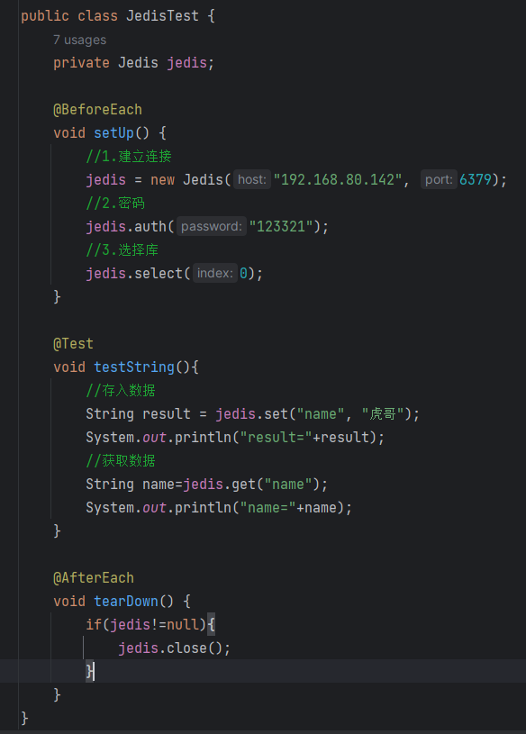
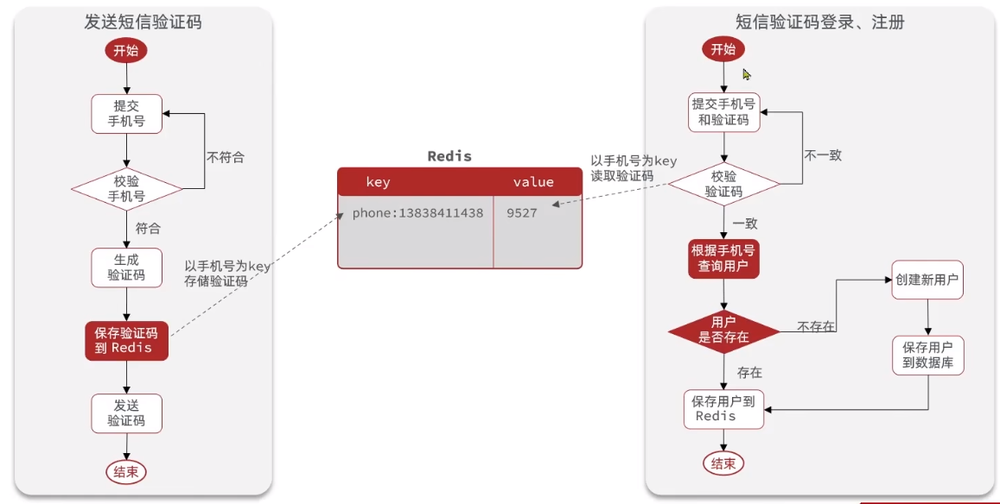
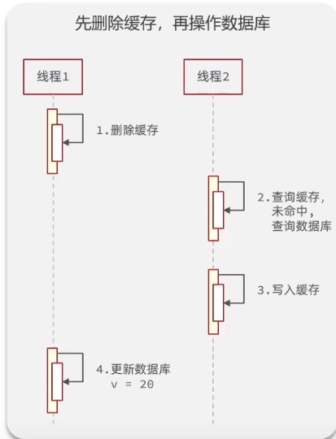
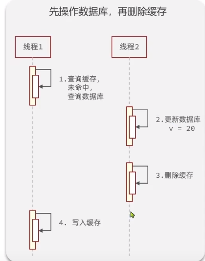
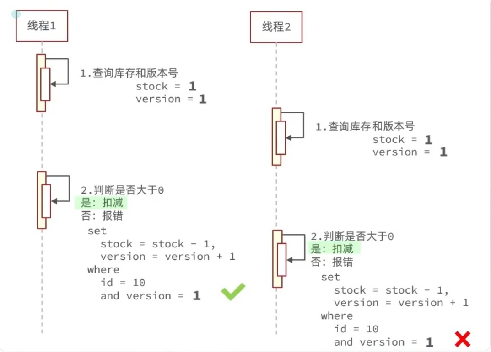
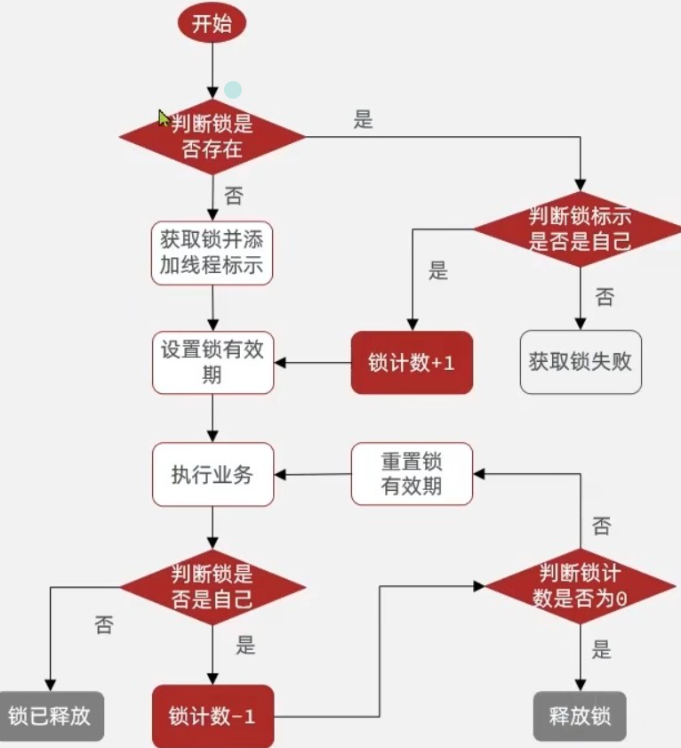
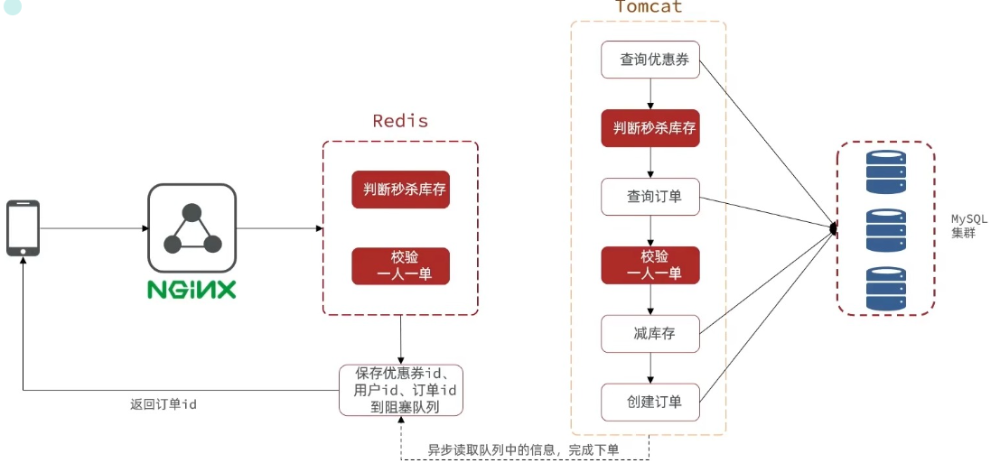
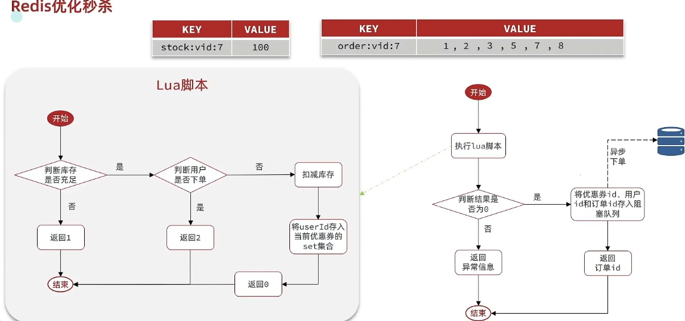

Redis 一、基础篇 1.初识redis SQL vs NOSQL
Redis
redis安装后的文件
redis-cli：是redis提供的命令行客户端
redis-server：是redis的服务端启动脚本
redis-sentinel：是redis的哨兵启动脚本
redis默认启动
安装完成后，在任意目录输入redis-server命令即可启动Redis：
这种启动属于前台启动，会阻塞整个会话窗口，窗口关闭或者按下CTRL + C则Redis停止。不推荐使用。
如果要让Redis以后台方式启动，则必须修改Redis配置文件，就在我们之前解压的redis安装包下，名字叫redis.conf：
我们先将这个配置文件备份一份：
1 cp redis.conf redis.conf .bck
然后修改redis.conf文件中的一些配置：
1 2 3 4 5 6 bind 0.0.0.0 daemonize yes requirepass 123321
Redis的其它常见配置：
1 2 3 4 5 6 7 8 9 10 port 6379 dir . databases 1 maxmemory 512mb logfile "redis.log"
启动Redis：
1 2 3 4 cd /usr/local/src/redis-6.2.6
停止服务：
1 2 3
开机自启
我们也可以通过配置来实现开机自启。
首先，新建一个系统服务文件：
1 vi /etc/systemd/system/redis.service
内容如下：
1 2 3 4 5 6 7 8 9 10 11 [Unit]
然后重载系统服务：
现在，我们可以用下面这组命令来操作redis了：
1 2 3 4 5 6 7 8
执行下面的命令，可以让redis开机自启：
Redis命令行客户端
Redis安装完成后就自带了命令行客户端：redis-cli，使用方式如下：
1 redis-cli [options] [commonds]
其中常见的options有：
-h 127.0.0.1：指定要连接的redis节点的IP地址，默认是127.0.0.1-p 6379：指定要连接的redis节点的端口，默认是6379-a 123321：指定redis的访问密码
其中的commonds就是Redis的操作命令，例如：
ping：与redis服务端做心跳测试，服务端正常会返回pong
不指定commond时，会进入redis-cli的交互控制台：
2.redis命令 Redis 数据结构介绍
Redis中String类型常见命令
Redis中key的结构
Redis中Hash类型常见命令
Redis中List类型常见命令
Redis中Set类型常见命令
Redis中SortedSet类型
SortedSet的用法
3.redis的Java客户端
Jedis快速入门
如图

Jedis连接池 Jedis本身是线程不安全的，并且频繁的创建和销毁连接会有性能损耗，因此使用Jedis连接池代替Jedis直连方式
更改建立连接的方式
SpringDataRedis
SpringDataRedis使用
2.编写连接池配置信息，默认是lettuce
3.方法测试
SpringDataRedis的序列化方式
RedisTemplate可以接受任意的Object作为值写入Redis，只不过写入之前会把Object序列化为字节形式，默认是采用JDK序列化，得到的结果是这样的
自定义RedisTemplate的序列化方式
SpringRedisTemplate 尽管JSON的序列化方式可以满足我们的需求，但仍然存在一些问题，如图：
在反序列化时知道对象的类型，json序列化器会将类的class类型写入json结果中，存入redis，会带来额外的内存开销
Spring默认提供了一个StringRedisTemplate类，它的key和value的序列化方式默认就是String方式。省去了我们自定义RedisTemplate的过程：
二、实战篇 1.短信登录 项目结构和项目导入
基于Session实现登录
发送短信验证码 1 2 3 4 5 6 7 8 9 10 11 12 13 14 15 16 17 18 @Override public Result sendCode (String phone, HttpSession session) {if (RegexUtils.isPhoneInvalid(phone)){return Result.fail("手机号格式错误！" );String code = RandomUtil.randomNumbers(6 );"code" ,code);"发送短信验证码成功，验证码：{}" ,code);return Result.ok();
短信验证码登录、注册 1 2 3 4 5 6 7 8 9 10 11 12 13 14 15 16 17 18 19 20 21 22 23 24 25 26 27 28 29 30 31 32 33 34 35 36 37 38 @Override public Result login (LoginFormDTO loginForm, HttpSession session) {String phone = loginForm.getPhone();if (RegexUtils.isPhoneInvalid(phone)){return Result.fail("手机号格式错误！" );Object cacheCode = session.getAttribute("code" );String code = loginForm.getCode();if (cacheCode==null ||!cacheCode.equals(code)){return Result.fail("验证码错误" );User user = query().eq("phone" , phone).one();if (user==null ){"user" ,user);return Result.ok();private User creatUserWithPhone (String phone) {User user = new User ();10 ));return user;
实现登录校验拦截器
拦截器
1 2 3 4 5 6 7 8 9 10 11 12 13 14 15 16 17 18 19 20 21 22 23 24 25 26 27 28 29 30 31 32 33 34 package com.hmdp.utils;import com.hmdp.entity.User;import org.springframework.web.servlet.HandlerInterceptor;import javax.servlet.http.HttpServletRequest;import javax.servlet.http.HttpServletResponse;import javax.servlet.http.HttpSession;public class LoginInterceptor implements HandlerInterceptor {@Override public boolean preHandle (HttpServletRequest request, HttpServletResponse response, Object handler) throws Exception {HttpSession session = request.getSession();Object user = session.getAttribute("user" );if (user==null ){401 );return false ;return true ;@Override public void afterCompletion (HttpServletRequest request, HttpServletResponse response, Object handler, Exception ex) throws Exception {
配置拦截器
1 2 3 4 5 6 7 8 9 10 11 12 13 14 15 16 17 18 19 20 21 package com.hmdp.config;import com.hmdp.utils.LoginInterceptor;import org.springframework.context.annotation.Configuration;import org.springframework.web.servlet.config.annotation.InterceptorRegistry;import org.springframework.web.servlet.config.annotation.WebMvcConfigurer;@Configuration public class MvcConfig implements WebMvcConfigurer {@Override public void addInterceptors (InterceptorRegistry registry) {new LoginInterceptor ()).excludePathPatterns("/shop/**" ,"/vourcher/**" ,"/shop-type/**" ,"/upload/**" ,"/blog/hot" ,"/user/code" ,"/user/login"
隐藏用户敏感信息 隐藏返回给前端的关键信息，将user转为UserDto对象
1 2 3 "user" , BeanUtil.copyProperties(user, UserDTO.class));return Result.ok();
集群的session共享问题
基于Redis实现共享session登录 
发送短信验证码：
1 2 3 4 5 6 7 8 9 10 11 12 13 14 15 16 17 18 19 20 21 @Resource private StringRedisTemplate stringRedisTemplate;@Override public Result sendCode (String phone, HttpSession session) {if (RegexUtils.isPhoneInvalid(phone)){return Result.fail("手机号格式错误！" );String code = RandomUtil.randomNumbers(6 );"发送短信验证码成功，验证码：{}" ,code);return Result.ok();
短信验证码登录、注册
1 2 3 4 5 6 7 8 9 10 11 12 13 14 15 16 17 18 19 20 21 22 23 24 25 26 27 28 29 30 31 32 33 34 35 36 37 38 39 40 41 42 43 @Override public Result login (LoginFormDTO loginForm, HttpSession session) {String phone = loginForm.getPhone();if (RegexUtils.isPhoneInvalid(phone)){return Result.fail("手机号格式错误！" );String cacheCode = stringRedisTemplate.opsForValue().get(RedisConstants.LOGIN_CODE_KEY +phone);String code = loginForm.getCode();if (cacheCode==null ||!cacheCode.equals(code)){return Result.fail("验证码错误" );User user = query().eq("phone" , phone).one();if (user==null ){String token = UUID.randomUUID().toString(true );UserDTO userDTO = BeanUtil.copyProperties(user, UserDTO.class);new HashMap <>(),true )return Result.ok(token);
拦截器
1 2 3 4 5 6 7 8 9 10 11 12 13 14 15 16 17 18 19 20 21 22 23 24 25 26 27 28 29 30 31 32 33 34 35 36 public class LoginInterceptor implements HandlerInterceptor {private StringRedisTemplate stringRedisTemplate;public LoginInterceptor (StringRedisTemplate stringRedisTemplate) {this .stringRedisTemplate = stringRedisTemplate;@Override public boolean preHandle (HttpServletRequest request, HttpServletResponse response, Object handler) throws Exception {String token = request.getHeader("authorization" );if (StrUtil.isBlank(token)){401 );return false ;if (userMap.isEmpty()){401 );return false ;UserDTO userDTO = BeanUtil.fillBeanWithMap(userMap, new UserDTO (), false );return true ;
解决状态登录刷新的问题
直接放行
RefreshTokenInterceptor中的代码
1 2 3 4 5 6 7 8 9 10 11 12 13 14 String token = request.getHeader("authorization" );if (StrUtil.isBlank(token)){return true ;if (userMap.isEmpty()){return true ;
LoginInterceptor中的代码
1 2 3 4 5 6 7 8 9 10 11 12 13 14 15 16 public class LoginInterceptor implements HandlerInterceptor {@Override public boolean preHandle (HttpServletRequest request, HttpServletResponse response, Object handler) throws Exception {if (UserHolder.getUser()==null ){401 );return false ;return true ;
2.商户查询缓存 添加商户缓存
ShopControll代码
1 2 3 4 @GetMapping("/{id}") public Result queryShopById (@PathVariable("id") Long id) {return shopService.queryById(id);
ServiceImpl层
1 2 3 4 5 6 7 8 9 10 11 12 13 14 15 16 17 18 19 20 21 22 @Override public Result queryById (Long id) {String shopJson = stringRedisTemplate.opsForValue().get(CACHE_SHOP_KEY + id);if (StrUtil.isNotBlank(shopJson)) {Shop shop = JSONUtil.toBean(shopJson, Shop.class);return Result.ok(shop);Shop shop = getById(id);if (shop == null ){return Result.fail("店铺不存在！！" );String jsonStr = JSONUtil.toJsonStr(shop);return Result.ok(shop);
完成了商户数据缓存之后，我们尝试做一下商户类型数据缓存
Controller层
1 2 3 4 @GetMapping("list") public Result queryTypeList () {return typeService.queryList();
Service层
1 2 3 public interface IShopTypeService extends IService <ShopType> { queryList () ;
ServiceImpl层
1 2 3 4 5 6 7 8 9 10 11 12 13 14 15 16 17 18 19 20 21 22 23 @Override public Result queryList () {0 , -1 );if (!shopTypes.isEmpty()) {return Result.ok(tmp);"sort" ).list();if (tmp == null ){return Result.fail("店铺类型不存在！！" );return Result.ok(tmp);
缓存更新策略
缓存更新是Redis为了节约内存而设计出来的一个东西，主要是因为内存数据宝贵，当我们想Redis插入太多数据，此时就可能会导致缓存中数据过多，所以Redis会对部分数据进行更新，或者把它成为淘汰更合适
内存淘汰：Redis自动进行，当Redis内存大道我们设定的max-memery时，会自动触发淘汰机制，淘汰掉一些不重要的数据（可以自己设置策略方式）超时剔除：当我们给Redis设置了过期时间TTL之后，Redis会将超时的数据进行删除，方便我们继续使用缓存主动更新：我们可以手动调用方法把缓存删除掉，通常用于解决缓存和数据库不一致问题
内存淘汰
超时剔除
主动更新
说明
不用自己维护， 利用Redis的内存淘汰机制， 当内存不足时自动淘汰部分数据。 下次查询时更新缓存。
给缓存数据添加TTL时间， 到期后自动删除缓存。 下次查询时更新缓存。
编写业务逻辑， 在修改数据库的同时， 更新缓存。
一致性
差
一般
好
维护成本
无
低
高
业务场景
低一致性需求：使用内存淘汰机制，例如店铺类型的查询缓存（因为这个很长一段时间都不需要更新）
高一致性需求：主动更新，并以超时剔除作为兜底方案，例如店铺详情查询的缓存
数据库和缓存不一致解决方案
由于我们的缓存数据源来自数据库，而数据库的数据是会发生变化的，因此，如果当数据库中数据发生变化，而缓存却没有同步，此时就会有一致性问题存在，其后果是
用户使用缓存中的过时数据，就会产生类似多线程数据安全问题，从而影响业务，产品口碑等
那么如何解决这个问题呢？有如下三种方式
Cache Aside Pattern 人工编码方式：缓存调用者在更新完数据库之后再去更新缓存，也称之为双写方案
Read/Write Through Pattern：缓存与数据库整合为一个服务，由服务来维护一致性。调用者调用该服务，无需关心缓存一致性问题。但是维护这样一个服务很复杂，市面上也不容易找到这样的一个现成的服务，开发成本高
Write Behind Caching Pattern：调用者只操作缓存，其他线程去异步处理数据库，最终实现一致性。但是维护这样的一个异步的任务很复杂，需要实时监控缓存中的数据更新，其他线程去异步更新数据库也可能不太及时，而且缓存服务器如果宕机，那么缓存的数据也就丢失了
数据库和缓存不一致采用什么方案
先操作缓存还是先操作数据库？我们来仔细分析一下这两种方式的线程安全问题
先删除缓存，再操作数据库


实现商铺缓存与数据库双写一致
1 2 3 4 5 6 7 8 9 10 @PutMapping public Result updateShop (@RequestBody Shop shop) {return shopService.update(shop);
Service层
1 Result update (Shop shop) ;
ServiceImpl层
1 2 3 4 5 6 7 8 9 10 11 12 @Override public Result update (Shop shop) {if (shop.getId() == null ){return Result.fail("店铺id不能为空！！" );return Result.ok();
缓存穿透的解决思路
缓存穿透 ：缓存穿透是指客户端请求的数据在缓存中和数据库中都不存在，这样缓存永远都不会生效（只有数据库查到了，才会让redis缓存，但现在的问题是查不到），会频繁的去访问数据库。常见的结局方案有两种
缓存空对象
优点：实现简单，维护方便
缺点：额外的内存消耗，可能造成短期的不一致
布隆过滤
优点：内存占用啥哦，没有多余的key
缺点：实现复杂，可能存在误判
缓存空对象 思路分析：当我们客户端访问不存在的数据时，会先请求redis，但是此时redis中也没有数据，就会直接访问数据库，但是数据库里也没有数据，那么这个数据就穿透了缓存，直击数据库。但是数据库能承载的并发不如redis这么高，所以如果大量的请求同时都来访问这个不存在的数据，那么这些请求就会访问到数据库，简单的解决方案就是哪怕这个数据在数据库里不存在，我们也把这个这个数据存在redis中去（这就是为啥说会有额外的内存消耗），这样下次用户过来访问这个不存在的数据时，redis缓存中也能找到这个数据，不用去查数据库。可能造成的短期不一致是指在空对象的存活期间，我们更新了数据库，把这个空对象变成了正常的可以访问的数据，但由于空对象的TTL还没过，所以当用户来查询的时候，查询到的还是空对象，等TTL过了之后，才能访问到正确的数据，不过这种情况很少见罢了布隆过滤 思路分析：布隆过滤器其实采用的是哈希思想来解决这个问题，通过一个庞大的二进制数组，根据哈希思想去判断当前这个要查询的数据是否存在，如果布隆过滤器判断存在，则放行，这个请求会去访问redis，哪怕此时redis中的数据过期了，但是数据库里一定会存在这个数据，从数据库中查询到数据之后，再将其放到redis中。如果布隆过滤器判断这个数据不存在，则直接返回。这种思想的优点在于节约内存空间，但存在误判，误判的原因在于：布隆过滤器使用的是哈希思想，只要是哈希思想，都可能存在哈希冲突
现在的逻辑是：如果这个数据不存在，将这个数据写入到Redis中，并且将value设置为空字符串，然后设置一个较短的TTL，返回错误信息。当再次发起查询时，先去Redis中判断value是否为空字符串，如果是空字符串，则说明是刚刚我们存的不存在的数据，直接返回错误信息
1 2 3 4 5 6 7 8 9 10 11 12 13 14 15 16 17 18 19 20 21 22 23 24 25 26 27 28 @Override public Result queryById (Long id) {String shopJson = stringRedisTemplate.opsForValue().get(CACHE_SHOP_KEY + id);if (StrUtil.isNotBlank(shopJson)) {Shop shop = JSONUtil.toBean(shopJson, Shop.class);return Result.ok(shop);if (shopjson != null ) {return Result.fail("店铺不存在！！" );Shop shop = getById(id);if (shop == null ) {"" , CACHE_NULL_TTL, TimeUnit.MINUTES);return Result.fail("店铺不存在！！" );String jsonStr = JSONUtil.toJsonStr(shop);return Result.ok(shop);
小结：
缓存穿透产生的原因是什么？
用户请求的数据在缓存中和在数据库中都不存在，不断发起这样的请求，会给数据库带来巨大压力
缓存产投的解决方案有哪些？
缓存null值
布隆过滤
增强id复杂度，避免被猜测id规律（可以采用雪花算法）
做好数据的基础格式校验
加强用户权限校验
做好热点参数的限流
缓存雪崩问题及解决思路
缓存雪崩是指在同一时间段，大量缓存的key同时失效，或者Redis服务宕机，导致大量请求到达数据库，带来巨大压力
解决方案
给不同的Key的TTL添加随机值，让其在不同时间段分批失效
利用Redis集群提高服务的可用性（使用一个或者多个哨兵(Sentinel)实例组成的系统，对redis节点进行监控，在主节点出现故障的情况下，能将从节点中的一个升级为主节点，进行故障转义，保证系统的可用性。 ）
给缓存业务添加降级限流策略
给业务添加多级缓存（浏览器访问静态资源时，优先读取浏览器本地缓存；访问非静态资源（ajax查询数据）时，访问服务端；请求到达Nginx后，优先读取Nginx本地缓存；如果Nginx本地缓存未命中，则去直接查询Redis（不经过Tomcat）；如果Redis查询未命中，则查询Tomcat；请求进入Tomcat后，优先查询JVM进程缓存；如果JVM进程缓存未命中，则查询数据库）
缓存击穿问题及解决思路
缓存击穿也叫热点Key问题，就是一个被高并发访问 并且缓存重建业务较复杂 的key突然失效了，那么无数请求访问就会在瞬间给数据库带来巨大的冲击
举个不太恰当的例子：一件秒杀中的商品的key突然失效了，大家都在疯狂抢购，那么这个瞬间就会有无数的请求访问去直接抵达数据库，从而造成缓存击穿
常见的解决方案有两种
互斥锁
逻辑过期
逻辑分析 ：假设线程1在查询缓存之后未命中，本来应该去查询数据库，重建缓存数据，完成这些之后，其他线程也就能从缓存中加载这些数据了。但是在线程1还未执行完毕时，又进来了线程2、3、4同时来访问当前方法，那么这些线程都不能从缓存中查询到数据，那么他们就会在同一时刻访问数据库，执行SQL语句查询，对数据库访问压力过大
解决方案一 ：互斥锁利用锁的互斥性，假设线程过来，只能一个人一个人的访问数据库，从而避免对数据库频繁访问产生过大压力，但这也会影响查询的性能，将查询的性能从并行变成了串行，我们可以采用tryLock方法+double check来解决这个问题
线程1在操作的时候，拿着锁把房门锁上了，那么线程2、3、4就不能都进来操作数据库，只有1操作完了，把房门打开了，此时缓存数据也重建好了，线程2、3、4直接从redis中就可以查询到数据。
解决方案二 ：逻辑过期方案方案分析：我们之所以会出现缓存击穿问题，主要原因是在于我们对key设置了TTL，如果我们不设置TTL，那么就不会有缓存击穿问题，但是不设置TTL，数据又会一直占用我们的内存，所以我们可以采用逻辑过期方案
我们之前是TTL设置在redis的value中，注意：这个过期时间并不会直接作用于Redis，而是我们后续通过逻辑去处理。假设线程1去查询缓存，然后从value中判断当前数据已经过期了，此时线程1去获得互斥锁，那么其他线程会进行阻塞，获得了锁的进程他会开启一个新线程去进行之前的重建缓存数据的逻辑，直到新开的线程完成者逻辑之后，才会释放锁，而线程1直接进行返回，假设现在线程3过来访问，由于线程2拿着锁，所以线程3无法获得锁，线程3也直接返回数据（但只能返回旧数据，牺牲了数据一致性，换取性能上的提高），只有等待线程2重建缓存数据之后，其他线程才能返回正确的数据
这种方案巧妙在于，异步构建缓存数据，缺点是在重建完缓存数据之前，返回的都是脏数据
对比互斥锁与逻辑删除
互斥锁方案：由于保证了互斥性，所以数据一致，且实现简单，只是加了一把锁而已，也没有其他的事情需要操心，所以没有额外的内存消耗，缺点在于有锁的情况，就可能死锁，所以只能串行执行，性能会受到影响逻辑过期方案：线程读取过程中不需要等待，性能好，有一个额外的线程持有锁去进行重构缓存数据，但是在重构数据完成之前，其他线程只能返回脏数据，且实现起来比较麻烦
解决方案
优点
缺点
互斥锁
没有额外的内存消耗 保证一致性 实现简单
线程需要等待，性能受影响 可能有死锁风险
逻辑过期
线程无需等待，性能较好
不保证一致性 有额外内存消耗 实现复杂
利用互斥锁解决缓存击穿问题
核心思路 ：相较于原来从缓存中查询不到数据后直接查询数据库而言，现在的方案是，进行查询之后，如果没有从缓存中查询到数据，则进行互斥锁的获取，获取互斥锁之后，判断是否获取到了锁，如果没获取到，则休眠一段时间，过一会儿再去尝试，知道获取到锁为止，才能进行查询如果获取到了锁的线程，则进行查询，将查询到的数据写入Redis，再释放锁，返回数据，利用互斥锁就能保证只有一个线程去执行数据库的逻辑，防止缓存击穿
操作锁的代码 核心思路就是利用redis的setnx方法来表示获取锁，如果redis没有这个key，则插入成功，返回1，如果已经存在这个key，则插入失败，返回0。在StringRedisTemplate中返回true/false，我们可以根据返回值来判断是否有线程成功获取到了锁
这里先把我们之前写的缓存穿透代码修改一下，提取成一个独立的方法
1 2 3 4 5 6 7 8 9 10 11 12 13 14 15 16 17 18 19 20 21 22 23 24 25 26 @Override public Shop queryWithPassThrough (Long id) {String shopJson = stringRedisTemplate.opsForValue().get(CACHE_SHOP_KEY + id);if (StrUtil.isNotBlank(shopJson)) {Shop shop = JSONUtil.toBean(shopJson, Shop.class);return shop;if (shopjson != null ) {return null ;Shop shop = getById(id);if (shop == null ) {"" , CACHE_NULL_TTL, TimeUnit.MINUTES);return null ;String jsonStr = JSONUtil.toJsonStr(shop);return shop;
上锁
1 2 3 4 5 private boolean tryLock (String key) {Boolean flag = stringRedisTemplate.opsForValue().setIfAbsent(key, "1" , 10 , TimeUnit.SECONDS);return BooleanUtil.isTrue(flag);
解锁
1 2 3 private void unlock (String key) {
在上面的基础上，使用try/catch/finally包裹，因为不管前面是否会有异常，最终都必须释放锁
1 2 3 4 5 6 7 8 9 10 11 12 13 14 15 16 17 18 19 20 21 22 23 24 25 26 27 28 29 30 31 32 33 34 35 36 37 38 @Override public Shop queryWithMutex (Long id) {String shopJson = stringRedisTemplate.opsForValue().get(CACHE_SHOP_KEY + id);if (StrUtil.isNotBlank(shopJson)) {Shop shop = JSONUtil.toBean(shopJson, Shop.class);return shop;if (shopJson != null ) {return null ;Shop shop = null ;try {boolean flag = tryLock(LOCK_SHOP_KEY + id);if (!flag) {50 );return queryWithMutex(id);if (shop == null ) {"" , CACHE_NULL_TTL, TimeUnit.MINUTES);return null ;String jsonStr = JSONUtil.toJsonStr(shop);catch (InterruptedException e) {throw new RuntimeException (e);finally {return shop;
利用逻辑过期解决缓存击穿问题
需求：根据id查询商铺的业务，基于逻辑过期方式来解决缓存击穿问题
思路分析：当用户开始查询redis时，判断是否命中
如果没有命中则直接返回空数据，不查询数据库
如果命中，则将value取出，判断value中的过期时间是否满足
如果没有过期，则直接返回redis中的数据
如果过期，则在开启独立线程后，直接返回之前的数据，独立线程去重构数据，重构完成后再释放互斥锁
1 2 3 4 5 6 7 8 9 10 11 12 13 14 15 16 17 18 19 20 21 22 23 24 25 26 27 28 29 30 31 32 33 34 35 36 37 38 39 40 41 42 43 private static final ExecutorService CACHE_REBUILD_EXECUTOR = Executors.newFixedThreadPool(10 );@Override public Shop queryWithLogicalExpire (Long id) {String json = stringRedisTemplate.opsForValue().get(CACHE_SHOP_KEY + id);if (StrUtil.isBlank(json)) {return null ;RedisData redisData = JSONUtil.toBean(json, RedisData.class);JSONObject shopJson = (JSONObject) redisData.getData();Shop shop = JSONUtil.toBean(shopJson, Shop.class);LocalDateTime expireTime = redisData.getExpireTime();if (LocalDateTime.now().isBefore(time)) {return shop;boolean flag = tryLock(LOCK_SHOP_KEY + id);if (flag) {try {this .saveShop2Redis(id, LOCK_SHOP_TTL);catch (Exception e) {throw new RuntimeException (e);finally {return shop;return shop;
封装Redis工具类 基于StringRedisTemplate封装一个缓存工具类，需满足下列要求
方法1：将任意Java对象序列化为JSON，并存储到String类型的Key中，并可以设置TTL过期时间
1 2 3 public void set (String key, Object value, Long time, TimeUnit timeUnit) {
方法2：将任意Java对象序列化为JSON，并存储在String类型的Key中，并可以设置逻辑过期时间，用于处理缓存击穿问题
1 2 3 4 5 6 7 8 9 10 public void setWithLogicExpire (String key, Object value, Long time, TimeUnit timeUnit) {new RedisData <>();
方法3：根据指定的Key查询缓存，并反序列化为指定类型，利用缓存空值的方式解决缓存穿透问题
1 2 3 4 5 6 7 8 9 10 11 12 13 14 15 16 17 18 19 20 21 22 23 24 25 public <R, ID> R queryWithPassThrough (String keyPrefix, ID id, Class<R> type, Function<ID, R> dbFallback, Long time, TimeUnit timeUnit) {String key = keyPrefix + id;String json = stringRedisTemplate.opsForValue().get(key);if (StrUtil.isNotBlank(json)) {return JSONUtil.toBean(json, type);if (json != null ) {return null ;R r = dbFallback.apply(id);if (r == null ) {"" , CACHE_NULL_TTL, TimeUnit.MINUTES);return null ;String jsonStr = JSONUtil.toJsonStr(r);this .set(key, jsonStr, time, timeUnit);return r;
3.优惠券秒杀 全局唯一id
在各类购物App中，都会遇到商家发放的优惠券
当用户抢购商品时，生成的订单会保存到
表中，而订单表如果使用数据库自增ID就会存在一些问题
id规律性太明显
受单表数据量的限制
如果我们的订单id有太明显的规律，那么对于用户或者竞争对手，就很容易猜测出我们的一些敏感信息，例如商城一天之内能卖出多少单，这明显不合适
随着我们商城的规模越来越大，MySQL的单表容量不宜超过500W，数据量过大之后，我们就要进行拆库拆表，拆分表了之后，他们从逻辑上讲，是同一张表，所以他们的id不能重复，于是乎我们就要保证id的唯一性
那么这就引出我们的全局ID生成器
了
全局ID生成器是一种在分布式系统下用来生成全局唯一ID的工具，一般要满足一下特性
为了增加ID的安全性，我们可以不直接使用Redis自增的数值，而是拼接一些其他信息
ID组成部分
符号位：1bit，永远为0
时间戳：31bit，以秒为单位，可以使用69年（2^31秒约等于69年）
序列号：32bit，秒内的计数器，支持每秒传输2^32个不同ID
那我们就根据我们分析的ID生成策略，来编写代码
1 2 3 4 5 6 public static void main (String[] args) {LocalDateTime tmp = LocalDateTime.of(2022 , 1 , 1 , 0 , 0 , 0 );
1 2 3 4 5 6 7 8 9 10 11 12 13 14 15 16 17 18 19 20 21 @Component public class RedisIdWorker {@Autowired private StringRedisTemplate stringRedisTemplate;public static final Long BEGIN_TIMESTAMP = 1640995200L ;public static final Long COUNT_BIT = 32L ;public long nextId (String keyPrefix) {LocalDateTime now = LocalDateTime.now();long currentSecond = now.toEpochSecond(ZoneOffset.UTC);long timeStamp = currentSecond - BEGIN_TIMESTAMP;String date = now.format(DateTimeFormatter.ofPattern("yyyy:MM:dd" ));long count = stringRedisTemplate.opsForValue().increment("inc:" +keyPrefix+":" +date);return timeStamp << COUNT_BIT | count;
添加优惠券
由于这里并没有后台管理页面，所以我们只能用POSTMAN模拟发送请求来新增秒杀券，请求路径http://localhost:8081/voucher/seckill， 请求方式POST，JSON数据如下，注意优惠券的截止日期设置，若优惠券过期，则不会在页面上显示。
1 2 3 4 5 6 7 8 9 10 11 12 { "shopId" : 1 , "title" : "100元代金券" , "subTitle" : "周一至周五可用" , "rules" : "全场通用\\n无需预约\\n可无限叠加" , "payValue" : 8000 , "actualValue" : 10000 , "type" : 1 , "stock" : 100 , "beginTime" : "2022-01-01T00:00:00" , "endTime" : "2022-10-31T23:59:59" }
实现秒杀下单
VoucherOrderController
1 2 3 4 5 6 7 8 9 10 @RestController @RequestMapping("/voucher-order") public class VoucherOrderController {@Autowired private IVoucherOrderService voucherOrderService;@PostMapping("/seckill/{id}") public Result seckillVoucher (@PathVariable("id") Long voucherId) {return voucherOrderService.seckillVoucher(voucherId);
IVoucherOrderService
1 2 3 public interface IVoucherOrderService extends IService <VoucherOrder> {seckillVoucher (Long voucherId) ;
VoucherOrderServiceImpl
1 2 3 4 5 6 7 8 9 10 11 12 13 14 15 16 17 18 19 20 21 22 23 24 25 26 27 28 29 30 31 32 33 34 35 36 37 38 39 40 41 42 43 44 45 46 @Autowired private ISeckillVoucherService seckillVoucherService;@Autowired private RedisIdWorker redisIdWorker;@Override public Result seckillVoucher (Long voucherId) {new LambdaQueryWrapper <>();SeckillVoucher seckillVoucher = seckillVoucherService.getOne(queryWrapper);if (LocalDateTime.now().isBefore(seckillVoucher.getBeginTime())) {return Result.fail("秒杀还未开始，请耐心等待" );if (LocalDateTime.now().isAfter(seckillVoucher.getEndTime())) {return Result.fail("秒杀已经结束！" );if (seckillVoucher.getStock() < 1 ) {return Result.fail("优惠券已被抢光了哦，下次记得手速快点" );boolean success = seckillVoucherService.update()"stock = stock - 1" )"voucher_id" ,voucherId)if (!success) {return Result.fail("库存不足" );VoucherOrder voucherOrder = new VoucherOrder ();long orderId = redisIdWorker.nextId("order" );Long id = UserHolder.getUser().getId();return Result.ok(orderId);
超卖问题
假设现在只剩下一张优惠券，线程1过来查询库存，判断库存数大于1，但还没来得及去扣减库存，此时库线程2也过来查询库存，发现库存数也大于1，那么这两个线程都会进行扣减库存操作，最终相当于是多个线程都进行了扣减库存，那么此时就会出现超卖问题
超卖问题是典型的多线程安全问题，针对这一问题的常见解决方案就是加锁：而对于加锁，我们通常有两种解决方案
悲观锁
悲观锁认为线程安全问题一定会发生，因此在操作数据之前先获取锁，确保线程串行执行
例如Synchronized、Lock等，都是悲观锁
乐观锁
乐观锁认为线程安全问题不一定会发生，因此不加锁，只是在更新数据的时候再去判断有没有其他线程对数据进行了修改
如果没有修改，则认为自己是安全的，自己才可以更新数据
如果已经被其他线程修改，则说明发生了安全问题，此时可以重试或者异常
悲观锁：悲观锁可以实现对于数据的串行化执行，比如syn，和lock都是悲观锁的代表，同时，悲观锁中又可以再细分为公平锁，非公平锁，可重入锁，等等
乐观锁：乐观锁会有一个版本号，每次操作数据会对版本号+1，再提交回数据时，会去校验是否比之前的版本大1 ，如果大1 ，则进行操作成功，这套机制的核心逻辑在于，如果在操作过程中，版本号只比原来大1 ，那么就意味着操作过程中没有人对他进行过修改，他的操作就是安全的，如果不大1，则数据被修改过，当然乐观锁还有一些变种的处理方式比如CAS
乐观锁的典型代表：就是CAS(Compare-And-Swap)，利用CAS进行无锁化机制加锁，var5 是操作前读取的内存值，while中的var1+var2 是预估值，如果预估值 == 内存值，则代表中间没有被人修改过，此时就将新值去替换 内存值
该项目中的具体解决方式
这里并不需要真的来指定一下版本号，完全可以使用stock来充当版本号，在扣减库存时，比较查询到的优惠券库存和实际数据库中优惠券库存是否相同
1 2 3 4 5 6 boolean success = seckillVoucherService.update()"stock = stock - 1" )"voucher_id" , voucherId)"stock" ,seckillVoucher.getStock())
以上逻辑的核心含义是：只要我扣减库存时的库存和之前我查询到的库存是一样的，就意味着没有人在中间修改过库存，那么此时就是安全的，但是以上这种方式通过测试发现会有很多失败的情况，失败的原因在于：在使用乐观锁过程中假设100个线程同时都拿到了100的库存，然后大家一起去进行扣减，但是100个人中只有1个人能扣减成功，其他的人在处理时，他们在扣减时，库存已经被修改过了，所以此时其他线程都会失败

那么我们继续完善代码，修改我们的逻辑，在这种场景，我们可以只判断是否有剩余优惠券，即只要数据库中的库存大于0，都能顺利完成扣减库存操作
1 2 3 4 5 6 7 boolean success = seckillVoucherService.update()"stock = stock - 1" )"voucher_id" , voucherId)"stock" ,seckillVoucher.getStock())"stock" , 0 )
一人一单
需求：修改秒杀业务，要求同一个优惠券，一个用户只能抢一张
具体操作逻辑如下：我们在判断库存是否充足之后，根据我们保存的订单数据，判断用户订单是否已存在
如果已存在，则不能下单，返回错误信息
如果不存在，则继续下单，获取优惠券
初步代码
1 2 3 4 5 6 + Long userId = UserHolder.getUser().getId();int count = query().eq("voucher_id" , voucherId).eq("user_id" , userId).count();if (count > 0 ){return Result.fail("你已经抢过优惠券了哦" );
存在问题 ：还是和之前一样，如果这个用户故意开多线程抢优惠券，那么在判断库存充足之后，执行一人一单逻辑之前，在这个区间如果进来了多个线程，还是可以抢多张优惠券的，那我们这里使用悲观锁来解决这个问题初步代码，我们把一人一单逻辑之后的代码都提取到一个createVoucherOrder方法中，然后给这个方法加锁
不管哪一个线程（例如线程A），运行到这个方法时，都要检查有没有其它线程B（或者C、 D等）正在用这个方法(或者该类的其他同步方法)，有的话要等正在使用synchronized方法的线程B（或者C 、D）运行完这个方法后再运行此线程A，没有的话，锁定调用者，然后直接运行。
1 2 3 4 5 6 7 8 9 10 11 12 13 14 15 16 17 18 19 20 21 22 23 24 25 26 27 28 29 30 31 private Result createVoucherOrder (Long voucherId) {Long userId = UserHolder.getUser().getId();int count = query().eq("voucher_id" , voucherId).eq("user_id" , userId).count();if (count > 0 ) {return Result.fail("你已经抢过优惠券了哦" );boolean success = seckillVoucherService.update()"stock = stock - 1" )"voucher_id" , voucherId)"stock" , 0 )if (!success) {return Result.fail("库存不足" );VoucherOrder voucherOrder = new VoucherOrder ();long orderId = redisIdWorker.nextId("order" );Long id = UserHolder.getUser().getId();return Result.ok(orderId);
但是这样加锁，锁的细粒度太粗了，在使用锁的过程中，控制锁粒度是一个非常重要的事情，因为如果锁的粒度太大，会导致每个线程进来都会被锁住，现在的情况就是所有用户都公用这一把锁，串行执行，效率很低，我们现在要完成的业务是一人一单，所以这个锁，应该只加在单个用户上，用户标识可以用userId
1 2 3 4 5 6 7 8 9 10 11 12 13 14 15 16 17 18 19 20 21 22 23 24 25 26 27 28 29 30 31 32 33 34 35 @Transactional public Result createVoucherOrder (Long voucherId) {Long userId = UserHolder.getUser().getId();synchronized (userId.toString().intern()) {int count = query().eq("voucher_id" , voucherId).eq("user_id" , userId).count();if (count > 0 ) {return Result.fail("你已经抢过优惠券了哦" );boolean success = seckillVoucherService.update()"stock = stock - 1" )"voucher_id" , voucherId)"stock" , 0 )if (!success) {return Result.fail("库存不足" );VoucherOrder voucherOrder = new VoucherOrder ();long orderId = redisIdWorker.nextId("order" );Long id = UserHolder.getUser().getId();return Result.ok(orderId);
由于toString的源码是new String，所以如果我们只用userId.toString()拿到的也不是同一个用户，需要使用intern()，如果字符串常量池中已经包含了一个等于这个string对象的字符串（由equals（object）方法确定），那么将返回池中的字符串。否则，将此String对象添加到池中，并返回对此String对象的引用。
但是以上代码还是存在问题，问题的原因在于当前方法被Spring的事务控制，如果你在内部加锁，可能会导致当前方法事务还没有提交，但是锁已经释放了，这样也会导致问题，所以我们选择将当前方法整体包裹起来，确保事务不会出现问题
1 2 3 4 5 6 7 8 9 10 11 12 13 14 15 16 17 18 19 20 21 22 23 @Override public Result seckillVoucher (Long voucherId) {new LambdaQueryWrapper <>();SeckillVoucher seckillVoucher = seckillVoucherService.getOne(queryWrapper);if (LocalDateTime.now().isBefore(seckillVoucher.getBeginTime())) {return Result.fail("秒杀还未开始，请耐心等待" );if (LocalDateTime.now().isAfter(seckillVoucher.getEndTime())) {return Result.fail("秒杀已经结束！" );if (seckillVoucher.getStock() < 1 ) {return Result.fail("优惠券已被抢光了哦，下次记得手速快点" );Long userId = UserHolder.getUser().getId();synchronized (userId.toString().intern()) {return createVoucherOrder(voucherId);
但是以上做法依然有问题，因为你调用的方法，其实是this.的方式调用的，事务想要生效，还得利用代理来生效，所以这个地方，我们需要获得原始的事务对象， 来操作事务，这里可以使用AopContext.currentProxy()来获取当前对象的代理对象，然后再用代理对象调用方法，记得要去IVoucherOrderService中创建createVoucherOrder方法
1 2 3 4 5 Long userId = UserHolder.getUser().getId();synchronized (userId.toString().intern()) {IVoucherOrderService proxy = (IVoucherOrderService) AopContext.currentProxy();return proxy.createVoucherOrder(voucherId);
1 2 3 4 <dependency > <groupId > org.aspectj</groupId > <artifactId > aspectjweaver</artifactId > </dependency >
同时在启动类上加上@EnableAspectJAutoProxy(exposeProxy = true)注解
1 2 3 4 5 6 7 8 9 @MapperScan("com.hmdp.mapper") @SpringBootApplication @EnableAspectJAutoProxy(exposeProxy = true) public class HmDianPingApplication {public static void main (String[] args) {
重启服务器，再次使用Jmeter测试，200个线程并发，但是只能抢到一张优惠券，目的达成
集群环境下的并发问题
通过加锁可以解决在单机情况下的一人一单安全问题，但是在集群模式下就不行了
我们将服务启动两份，端口分别为8081和8082
然后修改nginx的config目录下的nginx.conf文件，配置反向代理和负载均衡（默认轮询就行）
具体操作，我们使用POSTMAN发送两次请求，header携带同一用户的token，尝试用同一账号抢两张优惠券，发现是可行的。
失败原因分析：由于我们部署了多个Tomcat，每个Tomcat都有一个属于自己的jvm，那么假设在服务器A的Tomcat内部，有两个线程，即线程1和线程2，这两个线程使用的是同一份代码，那么他们的锁对象是同一个，是可以实现互斥的。但是如果在Tomcat的内部，又有两个线程，但是他们的锁对象虽然写的和服务器A一样，但是锁对象却不是同一个，所以线程3和线程4可以实现互斥，但是却无法和线程1和线程2互斥
这就是集群环境下，syn锁失效的原因，在这种情况下，我们需要使用分布式锁来解决这个问题，让锁不存在于每个jvm的内部，而是让所有jvm公用外部的一把锁（Redis）
4.分布式锁 基本原理和实现方式对比
分布式锁：满足分布式系统或集群模式下多线程课件并且可以互斥的锁
分布式锁的核心思想就是让大家共用同一把锁，那么我们就能锁住线程，不让线程进行，让程序串行执行，这就是分布式锁的核心思路
常见的分布式锁有三种
MySQL：MySQL本身就带有锁机制，但是由于MySQL的性能一般，所以采用分布式锁的情况下，使用MySQL作为分布式锁比较少见
Redis：Redis作为分布式锁是非常常见的一种使用方式，现在企业级开发中基本都是用Redis或者Zookeeper作为分布式锁，利用SETNX这个方法，如果插入Key成功，则表示获得到了锁，如果有人插入成功，那么其他人就回插入失败，无法获取到锁，利用这套逻辑完成互斥，从而实现分布式锁
Zookeeper：Zookeeper也是企业级开发中较好的一种实现分布式锁的方案，但本文是学Redis的，所以这里就不过多阐述了
Redis分布式锁的实现核心思路 实现分布式锁时需要实现两个基本方法
获取锁
互斥：确保只能有一个线程获取锁
非阻塞：尝试一次，成功返回true，失败返回false
1 SET lock thread01 NX EX 10
2.释放锁
核心思路
我们利用redis的SETNX方法，当有多个线程进入时，我们就利用该方法来获取锁。第一个线程进入时，redis 中就有这个key了，返回了1，如果结果是1，则表示他抢到了锁，那么他去执行业务，然后再删除锁，退出锁逻辑，没有抢到锁（返回了0）的线程，等待一定时间之后重试
实现分布式锁
1 2 3 4 5 6 7 8 9 10 11 12 13 14 public interface ILock {boolean tryLock (long timeoutSec) ;void unlock () ;
然后创建一个SimpleRedisLock类实现接口
1 2 3 4 5 6 7 8 9 10 11 12 13 14 15 16 17 18 19 20 21 22 23 24 25 26 27 28 29 public class SimpleRedisLock implements ILock {private static final String KEY_PREFIX = "lock:" ;private String name;private StringRedisTemplate stringRedisTemplate;public SimpleRedisLock (String name, StringRedisTemplate stringRedisTemplate) {this .name = name;this .stringRedisTemplate = stringRedisTemplate;@Override public boolean tryLock (long timeoutSec) {long threadId = Thread.currentThread().getId();Boolean success = stringRedisTemplate.opsForValue().setIfAbsent(KEY_PREFIX + name, threadId + "" , timeoutSec, TimeUnit.SECONDS);return Boolean.TRUE.equals(success);@Override public void unlock () {
1 2 3 4 5 6 7 8 9 10 11 12 13 14 15 16 17 18 19 20 21 22 23 24 25 26 27 28 29 30 31 32 33 34 35 36 37 @Override public Result seckillVoucher (Long voucherId) {new LambdaQueryWrapper <>();SeckillVoucher seckillVoucher = seckillVoucherService.getOne(queryWrapper);if (LocalDateTime.now().isBefore(seckillVoucher.getBeginTime())) {return Result.fail("秒杀还未开始，请耐心等待" );if (LocalDateTime.now().isAfter(seckillVoucher.getEndTime())) {return Result.fail("秒杀已经结束！" );if (seckillVoucher.getStock() < 1 ) {return Result.fail("优惠券已被抢光了哦，下次记得手速快点" );Long userId = UserHolder.getUser().getId();SimpleRedisLock redisLock = new SimpleRedisLock ("order:" + userId, stringRedisTemplate);boolean isLock = redisLock.tryLock(120 );if (!isLock) {return Result.fail("不允许抢多张优惠券" );try {IVoucherOrderService proxy = (IVoucherOrderService) AopContext.currentProxy();return proxy.createVoucherOrder(voucherId);finally {
Redis分布式锁误删情况说明
逻辑说明
持有锁的线程1在锁的内部出现了阻塞，导致他的锁TTL到期，自动释放
此时线程2也来尝试获取锁，由于线程1已经释放了锁，所以线程2可以拿到
但是现在线程1阻塞完了，继续往下执行，要开始释放锁了
那么此时就会将属于线程2的锁释放，这就是误删别人锁的情况
解决方案
解决方案就是在每个线程释放锁的时候，都判断一下这个锁是不是自己的，如果不属于自己，则不进行删除操作。
假设还是上面的情况，线程1阻塞，锁自动释放，线程2进入到锁的内部执行逻辑，此时线程1阻塞完了，继续往下执行，开始删除锁，但是线程1发现这把锁不是自己的，所以不进行删除锁的逻辑，当线程2执行到删除锁的逻辑时，如果TTL还未到期，则判断当前这把锁是自己的，于是删除这把锁
解决Redis分布式锁误删问题
需求：修改之前的分布式锁实现
满足：在获取锁的时候存入线程标识（用UUID标识，在一个JVM中，ThreadId一般不会重复，但是我们现在是集群模式，有多个JVM，多个JVM之间可能会出现ThreadId重复的情况），在释放锁的时候先获取锁的线程标识，判断是否与当前线程标识一致
核心逻辑：在存入锁的时候，放入自己的线程标识，在删除锁的时候，判断当前这把锁是不是自己存入的
具体实现代码如下
1 2 3 4 5 6 7 8 9 10 11 12 13 14 15 16 17 18 19 20 21 22 private static final String ID_PREFIX = UUID.randomUUID().toString(true ) + "-" ;@Override public boolean tryLock (long timeoutSec) {String threadId = ID_PREFIX + Thread.currentThread().getId();Boolean success = stringRedisTemplate.opsForValue().setIfAbsent(KEY_PREFIX + name, threadId, timeoutSec, TimeUnit.SECONDS);return Boolean.TRUE.equals(success);@Override public void unlock () {String threadId = ID_PREFIX + Thread.currentThread().getId();String id = stringRedisTemplate.opsForValue().get(KEY_PREFIX + name);if (threadId.equals(id)) {
分布式锁的原子性问题
更为极端的误删逻辑说明
假设线程1已经获取了锁，在判断标识一致之后，准备释放锁的时候，又出现了阻塞（例如JVM垃圾回收机制）
于是锁的TTL到期了，自动释放了
那么现在线程2趁虚而入，拿到了一把锁
但是线程1的逻辑还没执行完，那么线程1就会执行删除锁的逻辑
但是在阻塞前线程1已经判断了标识一致，所以现在线程1把线程2的锁给删了
那么就相当于判断标识那行代码没有起到作用
这就是删锁时的原子性问题
因为线程1的拿锁，判断标识，删锁，不是原子操作，所以我们要防止刚刚的情况
Lua脚本解决多条命令原子性问题
1 redis.call('命令名称' ,'key' ,'其他参数' , ...)
例如我们要执行set name Kyle，则脚本是这样
1 redis.call('set' , 'name' , 'Kyle' )
例如我我们要执行set name David，在执行get name，则脚本如下
1 2 3 4 5 6 ## 先执行set name David'set' , 'name' , 'David' )local name = redis.call('get' , 'name' )return name
写好脚本以后，需要用Redis命令来调用脚本，调用脚本的常见命令如下
1 EVAL script numkeys key [key ...] arg [arg ...]
例如，我们要调用redis.call('set', 'name', 'Kyle') 0这个脚本，语法如下
1 EVAL "return redis.call('set' , 'name' , 'Kyle' )" 0
如果脚本中的key和value不想写死，可以作为参数传递，key类型参数会放入KEYS数组，其他参数会放入ARGV数组，在脚本中可以从KEYS和ARGV数组中获取这些参数
1 EVAL "return redis.call('set', KEYS[1], ARGV[1])" 1 name Lucy
1 2 3 4 5 6 7 8 if (redis.call('get' , KEYS[1 ]) == ARGV[1 ]) then return redis.call('del' , KEYS[1 ])end return 0
利用Java代码调用Lua脚本改造分布式锁
在RedisTemplate中，可以利用execute方法去执行lua脚本
1 2 3 public <T> T execute (RedisScript<T> script, List<K> keys, Object... args) {return this .scriptExecutor.execute(script, keys, args);
1 2 3 4 5 6 7 8 9 10 11 12 13 14 private static final DefaultRedisScript<Long> UNLOCK_SCRIPT;static {new DefaultRedisScript ();new ClassPathResource ("unlock.lua" ));@Override public void unlock () {
分布式锁-Redisson
基于SETNX实现的分布式锁存在以下问题
重入问题
重入问题是指获取锁的线程，可以再次进入到相同的锁的代码块中，可重入锁的意义在于防止死锁，例如在HashTable这样的代码中，它的方法都是使用synchronized修饰的，加入它在一个方法内调用另一个方法，如果此时是不可重入的，那就死锁了。所以可重入锁的主要意义是防止死锁，我们的synchronized和Lock锁都是可重入的
不可重试
我们编写的分布式锁只能尝试一次，失败了就返回false，没有重试机制。但合理的情况应该是：当线程获取锁失败后，他应该能再次尝试获取锁
超时释放
我们在加锁的时候增加了TTL，这样我们可以防止死锁，但是如果卡顿(阻塞)时间太长，也会导致锁的释放。虽然我们采用Lua脚本来防止删锁的时候，误删别人的锁，但现在的新问题是没锁住，也有安全隐患
主从一致性
如果Redis提供了主从集群，那么当我们向集群写数据时，主机需要异步的将数据同步给从机，万一在同步之前，主机宕机了(主从同步存在延迟，虽然时间很短，但还是发生了)，那么又会出现死锁问题
那么什么是Redisson 呢
Redisson是一个在Redis的基础上实现的Java驻内存数据网格(In-Memory Data Grid)。它不仅提供了一系列的分布式Java常用对象，还提供了许多分布式服务，其中就包含了各种分布式锁的实现
Redis提供了分布式锁的多种多样功能
可重入锁(Reentrant Lock)
公平锁(Fair Lock)
联锁(MultiLock)
红锁(RedLock)
读写锁(ReadWriteLock)
信号量(Semaphore)
可过期性信号量(PermitExpirableSemaphore)
闭锁(CountDownLatch)
Redisson入门 导入依赖
1 2 3 4 5 <dependency > <groupId > org.redisson</groupId > <artifactId > redisson</artifactId > <version > 3.13.6</version > </dependency >
配置Redisson客户端，在config包下新建RedissonConfig类
1 2 3 4 5 6 7 8 9 10 11 12 13 14 15 16 17 import org.redisson.Redisson;import org.redisson.api.RedissonClient;import org.redisson.config.Config;import org.springframework.context.annotation.Bean;import org.springframework.context.annotation.Configuration;@Configuration public class RedissonConfig {@Bean public RedissonClient redissonClient () {Config config = new Config ();"redis://101.XXX.XXX.160:6379" )"root" );return Redisson.create(config);
使用Redission的分布式锁
1 2 3 4 5 6 7 8 9 10 11 12 13 14 15 16 17 18 19 @Resource private RedissonClient redissonClient;@Test void testRedisson () throws InterruptedException {RLock lock = redissonClient.getLock("anyLock" );boolean success = lock.tryLock(1 ,10 , TimeUnit.SECONDS);if (success) {try {"执行业务" );finally {
修改代码
1 2 3 4 5 6 7 8 9 10 11 12 13 14 15 16 17 18 19 20 21 22 23 24 25 26 27 28 29 30 31 32 33 @Resource private RedissonClient redissonClient;@Override public Result seckillVoucher (Long voucherId) {new LambdaQueryWrapper <>();SeckillVoucher seckillVoucher = seckillVoucherService.getOne(queryWrapper);if (LocalDateTime.now().isBefore(seckillVoucher.getBeginTime())) {return Result.fail("秒杀还未开始，请耐心等待" );if (LocalDateTime.now().isAfter(seckillVoucher.getEndTime())) {return Result.fail("秒杀已经结束！" );if (seckillVoucher.getStock() < 1 ) {return Result.fail("优惠券已被抢光了哦，下次记得手速快点" );Long userId = UserHolder.getUser().getId();RLock redisLock = redissonClient.getLock("order:" + userId);boolean isLock = redisLock.tryLock();if (!isLock) {return Result.fail("不允许抢多张优惠券" );try {IVoucherOrderService proxy = (IVoucherOrderService) AopContext.currentProxy();return proxy.createVoucherOrder(voucherId);finally {
Redisson可重入锁原理
在Lock锁中，他是借助于等曾的一个voaltile的一个state变量来记录重入的状态的
如果当前没有 人持有这把锁，那么state = 0
如果有 人持有这把锁，那么state = 1
如果持有者把锁的人再次持有这把锁，那么state会+1
如果对于synchronize而言，他在c语言代码中会有一个count
原理与state类似，也是重入一次就+1，释放一次就-1，直至减到0，表示这把锁没有被人持有
在redisson中，我们也支持可重入锁
在分布式锁中，它采用hash结构来存储锁，其中外层key表示这把锁是否存在，内层key则记录当前这把锁被哪个线程持有
method1在方法内部调用method2，method1和method2出于同一个线程，那么method1已经拿到一把锁了，想进入method2中拿另外一把锁，必然是拿不到的，于是就出现了死锁
1 2 3 4 5 6 7 8 9 10 11 12 13 14 15 16 17 18 19 20 21 22 23 24 25 26 27 28 29 30 31 32 33 34 35 36 37 38 39 40 @Resource private RedissonClient redissonClient;private RLock lock;@BeforeEach void setUp () {"lock" );@Test void method1 () {boolean success = lock.tryLock();if (!success) {"获取锁失败，1" );return ;try {"获取锁成功" );finally {"释放锁，1" );void method2 () {RLock lock = redissonClient.getLock("lock" );boolean success = lock.tryLock();if (!success) {"获取锁失败，2" );return ;try {"获取锁成功，2" );finally {"释放锁，2" );
所以我们需要额外判断，method1和method2是否处于同一线程，如果是同一个线程，则可以拿到锁，但是state会+1，之后执行method2中的方法，释放锁，释放锁的时候也只是将state进行-1，只有减至0，才会真正释放锁
由于我们需要额外存储一个state，所以用字符串型SET NX EX是不行的，需要用到Hash结构，但是Hash结构又没有NX这种方法，所以我们需要将原有的逻辑拆开，进行手动判断

为了保证原子性，所以流程图中的业务逻辑也是需要我们用Lua来实现的
1 2 3 4 5 6 7 8 9 10 11 12 13 14 15 16 17 18 19 20 local key = KEYS[1 ]; local threadId = ARGV[1 ]; local releaseTime = ARGV[2 ]; if (redis.call('exists' , key) == 0 ) then 'hset' , key, threadId, '1' );'expire' , key, releaseTime);return 1 ; end ;if (redis.call('hexists' , key, threadId) == 1 ) then 'hincrby' , key, thread, 1 );'expire' , key, releaseTime);return 1 ; end ;return 0 ;
1 2 3 4 5 6 7 8 9 10 11 12 13 14 15 16 17 18 19 local key = KEYS[1 ];local threadId = ARGV[1 ];local releaseTime = ARGV[2 ];if (redis.call ('HEXISTS' , key, threadId) == 0 ) then return nil; end ;local count = redis.call ('hincrby' , key, threadId, -1 );if (count > 0 ) then call ('expire' , key, releaseTime);return nil;else call ('del' , key);return nil;end ;
Redisson锁的MutiLock原理
为了提高Redis的可用性，我们会搭建集群或者主从，现在以主从为例
此时我们去写命令，写在主机上，主机会将数据同步给从机，但是假设主机还没来得及把数据写入到从机去的时候，主机宕机了
哨兵会发现主机宕机了，于是选举一个slave(从机)变成master(主机)，而此时新的master(主机)上并没有锁的信息，那么其他线程就可以获取锁，又会引发安全问题
为了解决这个问题。Redisson提出来了MutiLock锁，使用这把锁的话，那我们就不用主从了，每个节点的地位都是一样的，都可以当做是主机，那我们就需要将加锁的逻辑写入到每一个主从节点上，只有所有的服务器都写入成功，此时才是加锁成功，假设现在某个节点挂了，那么他去获取锁的时候，只要有一个节点拿不到，都不能算是加锁成功，就保证了加锁的可靠性
我们先使用虚拟机额外搭建两个Redis节点
1 2 3 4 5 6 7 8 9 10 11 12 13 14 15 16 17 18 19 20 21 22 23 24 25 26 @Configuration public class RedissonConfig {@Bean public RedissonClient redissonClient () {Config config = new Config ();"redis://192.168.137.130:6379" )"root" );return Redisson.create(config);@Bean public RedissonClient redissonClient2 () {Config config = new Config ();"redis://92.168.137.131:6379" )"root" );return Redisson.create(config);@Bean public RedissonClient redissonClient3 () {Config config = new Config ();"redis://92.168.137.132:6379" )"root" );return Redisson.create(config);
不可重入Redis分布式锁
原理：利用SETNX的互斥性；利用EX避免死锁；释放锁时判断线程标识
缺陷：不可重入、无法重试、锁超时失效
可重入Redis分布式锁
原理：利用Hash结构，记录线程标识与重入次数；利用WatchDog延续锁时间；利用信号量控制锁重试等待
缺陷：Redis宕机引起锁失效问题
Redisson的multiLock
原理：多个独立的Redis节点，必须在所有节点都获取重入锁，才算获取锁成功
异步秒杀思路
5.秒杀优化 异步秒杀思路
我们先来回顾一下下单流程
当用户发起请求，此时会先请求Nginx，Nginx反向代理到Tomcat，而Tomcat中的程序，会进行串行操作，分为如下几个步骤
查询优惠券
判断秒杀库存是否足够
查询订单
校验是否一人一单
扣减库存
创建订单
在这六个步骤中，有很多操作都是要去操作数据库的，而且还是一个线程串行执行，这样就会导致我们的程序执行很慢，所以我们需要异步程序执行，那么如何加速呢？
优化方案 ：我们将耗时较短的逻辑判断放到Redis中，例如：库存是否充足，是否一人一单这样的操作，只要满足这两条操作，那我们是一定可以下单成功的，不用等数据真的写进数据库，我们直接告诉用户下单成功就好了。然后后台再开一个线程，后台线程再去慢慢执行队列里的消息，这样我们就能很快的完成下单业务。

但是这里还存在两个难点
我们怎么在Redis中快速校验是否一人一单，还有库存判断
我们校验一人一单和将下单数据写入数据库，这是两个线程，我们怎么知道下单是否完成。
我们需要将一些信息返回给前端，同时也将这些信息丢到异步queue中去，后续操作中，可以通过这个id来查询下单逻辑是否完成
我们现在来看整体思路：当用户下单之后，判断库存是否充足，只需要取Redis中根据key找对应的value是否大于0即可，如果不充足，则直接结束。如果充足，则在Redis中判断用户是否可以下单，如果set集合中没有该用户的下单数据，则可以下单，并将userId和优惠券存入到Redis中，并且返回0，整个过程需要保证是原子性的，所以我们要用Lua来操作，同时由于我们需要在Redis中查询优惠券信息，所以在我们新增秒杀优惠券的同时，需要将优惠券信息保存到Redis中
完成以上逻辑判断时，我们只需要判断当前Redis中的返回值是否为0，如果是0，则表示可以下单，将信息保存到queue中去，然后返回，开一个线程来异步下单，其阿奴单可以通过返回订单的id来判断是否下单成功

Redis完成秒杀资格判断
需求：
新增秒杀优惠券的同时，将优惠券信息保存到Redis中
基于Lua脚本，判断秒杀库存、一人一单，决定用户是否秒杀成功
步骤一：修改保存优惠券相关代码
1 2 3 4 5 6 7 8 9 10 11 12 13 14 15 @Override @Transactional public void addSeckillVoucher (Voucher voucher) {SeckillVoucher seckillVoucher = new SeckillVoucher ();
步骤二：编写Lua脚本，字符串转数字是 tonumber()**
1 2 3 4 5 6 7 8 9 10 11 12 13 14 15 16 17 18 19 20 21 local voucherId = ARGV[1 ]local userId = ARGV[2 ]local stockKey = 'seckill:stock:' .. voucherIdlocal orderKey = 'seckill:order:' .. voucherIdif (tonumber (redis.call('get' , stockKey)) <= 0 ) then return 1 end if (redis.call('sismember' , orderKey, userId) == 1 ) then return 2 end 'incrby' , stockKey, -1 )'sadd' , orderKey, userId)return 0
1 2 3 4 5 6 7 8 9 10 11 12 13 14 15 16 @Override public Result seckillVoucher (Long voucherId) {Long result = stringRedisTemplate.execute(SECKILL_SCRIPT,if (result.intValue() != 0 ) {return Result.fail(result.intValue() == 1 ? "库存不足" : "不能重复下单" );long orderId = redisIdWorker.nextId("order" );return Result.ok(orderId);
基于阻塞队列实现秒杀优化
修改下单的操作，我们在下单时，是通过Lua表达式去原子执行判断逻辑，如果判断结果不为0，返回错误信息，如果判断结果为0，则将下单的逻辑保存到队列中去，然后异步执行
需求
如果秒杀成功，则将优惠券id和用户id封装后存入阻塞队列
开启线程任务，不断从阻塞队列中获取信息，实现异步下单功能
步骤一：创建阻塞队列
1 private final BlockingQueue<VoucherOrder> orderTasks = new ArrayBlockingQueue <>(1024 * 1024 );
1 2 3 4 5 6 7 8 9 10 11 12 13 14 15 16 17 18 @Override public Result seckillVoucher (Long voucherId) {Long result = stringRedisTemplate.execute(SECKILL_SCRIPT,if (result.intValue() != 0 ) {return Result.fail(result.intValue() == 1 ? "库存不足" : "不能重复下单" );long orderId = redisIdWorker.nextId("order" );VoucherOrder voucherOrder = new VoucherOrder ();return Result.ok(orderId);
实现异步下单功能
先创建一个线程池
1 private static final ExecutorService SECKILL_ORDER_EXECUTOR = Executors.newSingleThreadExecutor();
2.创建线程任务，秒杀业务需要在类初始化之后，就立即执行，所以这里需要用到@PostConstruct注解
1 2 3 4 5 6 7 8 9 10 11 12 13 14 15 16 17 18 19 20 @PostConstruct private void init () {new VoucherOrderHandler ());private class VoucherOrderHandler implements Runnable {@Override public void run () {while (true ) {try {VoucherOrder voucherOrder = orderTasks.take();catch (Exception e) {"订单处理异常" , e);
3.编写创建订单的业务逻辑
1 2 3 4 5 6 7 8 9 10 11 12 13 14 15 16 17 18 19 20 private IVoucherOrderService proxy;private void handleVoucherOrder (VoucherOrder voucherOrder) {Long userId = voucherOrder.getUserId();RLock redisLock = redissonClient.getLock("order:" + userId);boolean isLock = redisLock.tryLock();if (!isLock) {"不允许重复下单!" );return ;try {finally {
我们可以将proxy放在成员变量的位置，然后在主线程中获取代理对象
1 2 3 4 5 6 7 8 9 10 11 12 13 14 15 16 17 18 19 20 @Override public Result seckillVoucher (Long voucherId) {Long result = stringRedisTemplate.execute(SECKILL_SCRIPT,if (result.intValue() != 0 ) {return Result.fail(result.intValue() == 1 ? "库存不足" : "不能重复下单" );long orderId = redisIdWorker.nextId("order" );VoucherOrder voucherOrder = new VoucherOrder ();return Result.ok(orderId);
秒杀业务的优化思路是什么？
先利用Redis完成库存容量、一人一单的判断，完成抢单业务
再将下单业务放入阻塞队列，利用独立线程异步下单
基于阻塞队列的异步秒杀存在哪些问题？
内存限制问题：
我们现在使用的是JDK里的阻塞队列，它使用的是JVM的内存，如果在高并发的条件下，无数的订单都会放在阻塞队列里，可能就会造成内存溢出，所以我们在创建阻塞队列时，设置了一个长度，但是如果真的存满了，再有新的订单来往里塞，那就塞不进去了，存在内存限制问题
数据安全问题：
经典服务器宕机了，用户明明下单了，但是数据库里没看到
6.Redis消息队列 认识消息队列
什么是消息队列？字面意思就是存放消息的队列，最简单的消息队列模型包括3个角色
消息队列：存储和管理消息，也被称为消息代理（Message Broker）
生产者：发送消息到消息队列
消费者：从消息队列获取消息并处理消息
使用队列的好处在于解耦：举个例子，快递员(生产者)把快递放到驿站/快递柜里去(Message Queue)去，我们(消费者)从快递柜/驿站去拿快递，这就是一个异步，如果耦合，那么快递员必须亲自上楼把快递递到你手里，服务当然好，但是万一我不在家，快递员就得一直等我，浪费了快递员的时间。所以解耦还是非常有必要的
那么在这种场景下我们的秒杀就变成了：在我们下单之后，利用Redis去进行校验下单的结果，然后在通过队列把消息发送出去，然后在启动一个线程去拿到这个消息，完成解耦，同时也加快我们的响应速度
这里我们可以直接使用一些现成的(MQ)消息队列，如kafka，rabbitmq等，但是如果没有安装MQ，我们也可以使用Redis提供的MQ方案
基于List实现消息队列
基于List结构模拟消息队列
消息队列(Message Queue)，字面意思就是存放消息的队列，而Redis的list数据结构是一个双向链表，很容易模拟出队列的效果
队列的入口和出口不在同一边，所以我们可以利用：LPUSH结合RPOP或者RPUSH结合LPOP来实现消息队列。
不过需要注意的是，当队列中没有消息时，RPOP和LPOP操作会返回NULL，而不像JVM阻塞队列那样会阻塞，并等待消息，所以我们这里应该使用BRPOP或者BLPOP来实现阻塞效果
基于List的消息队列有哪些优缺点？
优点
利用Redis存储，不受限于JVM内存上限
基于Redis的持久化机制，数据安全性有保障
可以满足消息有序性
缺点
无法避免消息丢失(经典服务器宕机)
只支持单消费者(一个消费者把消息拿走了，其他消费者就看不到这条消息了)
基于PubSub的消息队列
PubSub(发布订阅)是Redis2.0版本引入的消息传递模型。顾名思义，消费和可以订阅一个或多个channel，生产者向对应channel发送消息后，所有订阅者都能收到相关消息
SUBSCRIBE channel [channel]：订阅一个或多个频道
PUBLISH channel msg：向一个频道发送消息
PSUBSCRIBE pattern [pattern]：订阅与pattern格式匹配的所有频道
基于PubSub的消息队列有哪些优缺点
优点：
采用发布订阅模型，支持多生产，多消费
缺点：
不支持数据持久化
无法避免消息丢失（如果向频道发送了消息，却没有人订阅该频道，那发送的这条消息就丢失了）
消息堆积有上限，超出时数据丢失（消费者拿到数据的时候处理的太慢，而发送消息发的太快）
基于Stream的消息队列
Stream是Redis 5.0引入的一种新数据类型，可以时间一个功能非常完善的消息队列
发送消息的命令
1 XADD key [NOMKSTREAM] [MAXLEN|MINID [=!~] threshold [LIMIT count]] *|ID field value [field value ...]
NOMKSTREAM
[MAXLEN|MINID [=!~] threshold [LIMIT count]]
*|ID
消息的唯一id，*代表由Redis自动生成。格式是”时间戳-递增数字”，例如”114514114514-0”
field value [field value …]
发送到队列中的消息，称为Entry。格式就是多个key-value键值对
1 2 users * name jack age 21
1 XREAD [COUNT count] [BLOCK milliseconds] STREAMS key [key ...] ID [ID ...]
[COUNT count]
[BLOCK milliseconds]
STREAMS key [key …]
ID [ID …]
起始ID，只返回大于该ID的消息
0：表示从第一个消息开始
$：表示从最新的消息开始
例如：使用XREAD读取第一个消息
1 2 3 4 5 6 7 8 BASHusers 0"users" "1667119621804-0" "name" "jack" "age" "21"
1 2 BASHusers $
在业务开发中，我们可以使用循环调用的XREAD阻塞方式来查询最新消息，从而实现持续监听队列的效果，伪代码如下
1 2 3 4 5 6 7 8 9 10 11 JAVAwhile (true ) {Object msg = redis.execute("XREAD COUNT 1 BLOCK 2000 STREAMS users $" );if (msg == null ){continue ;
注意：当我们指定其实ID为$时，代表只能读取到最新消息，如果当我们在处理一条消息的过程中，又有超过1条以上的消息到达队列，那么下次获取的时候，也只能获取到最新的一条，会出现漏读消息的问题
STREAM类型消息队列的XREAD命令特点
消息可回溯
一个消息可以被多个消费者读取
可以阻塞读取
有漏读消息的风险
基于Stream的消息队列–消费者组
消费者组(Consumer Group)：将多个消费者划分到一个组中，监听同一个队列，具备以下特点
消息分流
队列中的消息会分留给组内的不同消费者，而不是重复消费者，从而加快消息处理的速度
消息标识
消费者会维护一个标识，记录最后一个被处理的消息，哪怕消费者宕机重启，还会从标识之后读取消息，确保每一个消息都会被消费
消息确认
消费者获取消息后，消息处于pending状态，并存入一个pending-list，当处理完成后，需要通过XACK来确认消息，标记消息为已处理，才会从pending-list中移除
创建消费者组
1 XGROUP CREATE key groupName ID [MKSTREAM]
key
groupName
ID
起始ID标识，$代表队列中的最后一个消息，0代表队列中的第一个消息
MKSTREAM
其他常见命令
1 2 BASH
1 2 BASH
1 2 BASH
从消费者组中读取消息
1 2 BASH
group
consumer
count
BLOCK milliseconds
NOACK
无需手动ACK，获取到消息后自动确认（一般不用，我们都是手动确认）
STREAMS key
ID
获取消息的起始ID
>：从下一个未消费的消息开始(pending-list中)其他：根据指定id从pending-list中获取已消费但未确认的消息，例如0，是从pending-list中的第一个消息开始
消费者监听消息的基本思路
1 2 3 4 5 6 7 8 9 10 11 12 13 14 15 16 17 18 19 20 21 22 23 24 25 26 27 28 29 while (true ){Object msg = redis.call("XREADGROUP GROUP g1 c1 COUNT 1 BLOCK 2000 STREAMS s1 >" )if (msg == null ){continue ;try {catch (Exception e){while (true ){Object msg = redis.call("XREADGROUP GROUP g1 c1 COUNT 1 STREAMS s1 0" );if (msg == null ){break ;try {catch (Exception e){".." );continue ;
STREAM类型消息队列的XREADGROUP命令的特点
消息可回溯
可以多消费者争抢消息，加快消费速度
可以阻塞读取
没有消息漏读风险
有消息确认机制，保证消息至少被消费一次
List
PubSub
Stream
消息持久化
支持
不支持
支持
阻塞读取
支持
支持
支持
消息堆积处理
受限于内存空间， 可以利用多消费者加快处理
受限于消费者缓冲区
受限于队列长度， 可以利用消费者组提高消费速度，减少堆积
消息确认机制
不支持
不支持
支持
消息回溯
不支持
不支持
支持
Stream消息队列实现异步秒杀下单
需求：
创建一个Stream类型的消息队列，名为stream.orders
修改之前的秒杀下单Lua脚本，在认定有抢购资格后，直接向stream.orders中添加消息，内容包含voucherId、userId、orderId
项目启动时，开启一个线程任务，尝试获取stream.orders中的消息，完成下单
步骤一：创建一个Stream类型的消息队列，名为stream.orders
1 XGROUP CREATE stream.orders g1 0 MKSTREAM
步骤二：修改Lua脚本，新增orderId参数，并将订单信息加入到消息队列中
1 2 3 4 5 6 7 8 9 10 11 12 13 14 15 16 17 18 19 20 21 22 23 24 25 local voucherId = ARGV[1 ]local userId = ARGV[2 ]local id = ARGV[3 ]local stockKey = 'seckill:stock:' .. voucherIdlocal orderKey = 'seckill:order:' .. voucherIdif (tonumber (redis.call('get' , stockKey)) <= 0 ) then return 1 end if (redis.call('sismember' , orderKey, userId) == 1 ) then return 2 end 'incrby' , stockKey, -1 )'sadd' , orderKey, userId)"sadd" , 'stream.orders' , '*' , 'userId' , userId, 'voucherId' , voucherId, 'id' , id)return 0
1 2 3 4 5 6 7 8 9 10 11 12 13 14 @Override public Result seckillVoucher (Long voucherId) {long orderId = redisIdWorker.nextId("order" );Long result = stringRedisTemplate.execute(SECKILL_SCRIPT,if (result.intValue() != 0 ) {return Result.fail(result.intValue() == 1 ? "库存不足" : "不能重复下单" );return Result.ok(orderId);
修改我们的VoucherOrderHandler
1 2 3 4 5 6 7 8 9 10 11 12 13 14 15 16 17 18 19 20 21 22 23 24 25 26 27 28 29 30 31 32 33 34 35 36 37 38 39 40 41 42 43 44 45 46 47 48 49 50 51 52 53 54 55 56 57 58 59 60 61 62 63 64 65 66 String queueName = "stream.orders" ;private class VoucherOrderHandler implements Runnable {@Override public void run () {while (true ) {try {"g1" , "c1" ),1 ).block(Duration.ofSeconds(2 )),if (records == null || records.isEmpty()) {continue ;0 );VoucherOrder voucherOrder = BeanUtil.fillBeanWithMap(values, new VoucherOrder (), true );"g1" , record.getId());catch (Exception e) {"订单处理异常" , e);private void handlePendingList () {while (true ) {try {"g1" , "c1" ),1 ),"0" )));if (records == null || records.isEmpty()) {break ;0 );VoucherOrder voucherOrder = BeanUtil.fillBeanWithMap(values, new VoucherOrder (), true );"g1" , record.getId());catch (Exception e) {"处理pending-list异常" );try {50 );catch (InterruptedException ex) {throw new RuntimeException (ex);
7.达人探店 查看和发布探店笔记
1 2 3 4 5 6 7 8 9 10 11 12 13 14 15 16 17 18 19 20 21 22 23 24 25 26 27 28 29 30 31 32 33 34 35 36 @Service public class BlogServiceImpl extends ServiceImpl <BlogMapper, Blog> implements IBlogService {@Resource private IUserService userService;@Override public Result queryHotBlog (Integer current) {"liked" )new Page <>(current, SystemConstants.MAX_PAGE_SIZE));this ::queryBlogUser);return Result.ok(records);@Override public Result queryById (Integer id) {Blog blog = getById(id);if (blog == null ) {return Result.fail("评价不存在或已被删除" );return Result.ok(blog);private void queryBlogUser (Blog blog) {Long userId = blog.getUserId();User user = userService.getById(userId);
点赞功能
问题分析：这种方式会导致一个用户无限点赞，明显是不合理的
造成这个问题的原因是，我们现在的逻辑，发起请求只是给数据库+1，所以才会出现这个问题
需求
同一个用户只能对同一篇笔记点赞一次，再次点击则取消点赞
如果当前用户已经点赞，则点赞按钮高亮显示（前端已实现，判断字段Blog类的isLike属性）
实现步骤
修改点赞功能，利用Redis中的set集合来判断是否点赞过，未点赞则点赞数+1，已点赞则点赞数-1
修改根据id查询的业务，判断当前登录用户是否点赞过，赋值给isLike字段
修改分页查询Blog业务，判断当前登录用户是否点赞过，赋值给isLike字段
1 2 3 4 5 6 7 8 9 10 11 12 13 14 15 16 17 18 19 20 21 22 23 24 25 @Override public Result likeBlog (Long id) {Long userId = UserHolder.getUser().getId();String key = BLOG_LIKED_KEY + id;Boolean isLiked = stringRedisTemplate.opsForSet().isMember(key, userId.toString());if (BooleanUtil.isFalse(isLiked)) {boolean success = update().setSql("liked = liked + 1" ).eq("id" , id).update();if (success) {else {boolean success = update().setSql("liked = liked - 1" ).eq("id" , id).update();if (success){return Result.ok();
修改完毕之后，页面上还不能立即显示点赞完毕的后果，我们还需要修改查询Blog业务，判断Blog是否被当前用户点赞过
1 2 3 4 5 6 7 8 9 10 11 12 13 14 15 16 17 18 19 20 21 22 23 24 25 26 27 28 29 30 31 32 33 34 35 36 37 38 @Override public Result queryHotBlog (Integer current) {"liked" )new Page <>(current, SystemConstants.MAX_PAGE_SIZE));return Result.ok(records);@Override public Result queryById (Integer id) {Blog blog = getById(id);if (blog == null ) {return Result.fail("评价不存在或已被删除" );return Result.ok(blog);private void isBlogLiked (Blog blog) {Long userId = UserHolder.getUser().getId();String key = BLOG_LIKED_KEY + blog.getId();Boolean isMember = stringRedisTemplate.opsForSet().isMember(key, userId.toString());
点赞排行榜
当我们点击探店笔记详情页面时，应该按点赞顺序展示点赞用户，比如显示最早点赞的TOP5，形成点赞排行榜，就跟QQ空间发的说说一样，可以看到有哪些人点了赞
之前的点赞是放到Set集合中，但是Set集合又不能排序，所以这个时候，我们就可以改用SortedSet(Zset)
那我们这里顺便就来对比一下这些集合的区别
List
Set
SortedSet
排序方式
按添加顺序排序
无法排序
根据score值排序
唯一性
不唯一
唯一
唯一
查找方式
按索引查找或首尾查找
根据元素查找
根据元素查找
修改BlogServiceImpl
1 2 3 4 5 6 7 8 9 10 11 12 13 14 15 16 17 18 19 20 21 22 23 24 25 26 27 @Override public Result likeBlog (Long id) {Long userId = UserHolder.getUser().getId();String key = BLOG_LIKED_KEY + id;Double score = stringRedisTemplate.opsForZSet().score(key, userId.toString());if (score == null ) {boolean success = update().setSql("liked = liked + 1" ).eq("id" , id).update();if (success) {else {boolean success = update().setSql("liked = liked - 1" ).eq("id" , id).update();if (success) {return Result.ok();
同时修改isBlogLiked方法，在原有逻辑上，判断用户是否已登录，登录状态下才会继续判断用户是否点赞
1 2 3 4 5 6 7 8 9 10 11 12 private void isBlogLiked (Blog blog) {UserDTO userDTO = UserHolder.getUser();if (userDTO == null ) {return ;String key = BLOG_LIKED_KEY + blog.getId();Double score = stringRedisTemplate.opsForZSet().score(key, userDTO.getId().toString());null );
那我们继续来完善显示点赞列表功能，查看浏览器请求，这个请求目前应该是404的，因为我们还没有写，他需要一个list返回值，显示top5点赞的用户
controller层
1 2 3 4 @GetMapping("/likes/{id}") public Result queryBlogLikes (@PathVariable Integer id) {return blogService.queryBlogLikes(id);
1 2 3 4 5 6 7 8 9 10 11 12 13 14 15 16 17 18 19 20 21 @Override public Result queryBlogLikes (Integer id) {String key = BLOG_LIKED_KEY + id;0 , 4 );if (top5 == null || top5.isEmpty()) {return Result.ok(Collections.emptyList());String idsStr = StrUtil.join("," , ids);"id" , ids)"order by field(id," + idsStr + ")" )return Result.ok(userDTOS);
8.好友关注 关注和取消
当我们进入到笔记详情页面时，会发送一个请求，判断当前登录用户是否关注了笔记博主
当我们点击关注按钮时，会发送一个请求，实现关注/取关
关注是User之间的关系，是博主与粉丝的关系，数据库中有一张tb_follow表来标示
Field
Type
Collation
Null
Key
Default
Extra
Comment
id
bigint
(NULL)
NO
PRI
(NULL)
auto_increment
主键
user_id
bigint unsigned
(NULL)
NO
(NULL)
用户id
follow_user_id
bigint unsigned
(NULL)
NO
(NULL)
关联的用户id
create_time
timestamp
(NULL)
NO
CURRENT_TIMESTAMP
DEFAULT_GENERATED
创建时间
1 2 3 4 5 6 7 8 9 10 11 12 13 14 15 16 @RestController @RequestMapping("/follow") public class FollowController {@Resource private IFollowService followService;@GetMapping("/or/not/{id}") public Result isFollow (@PathVariable("id") Long followUserId) {return followService.isFollow(followUserId);@PutMapping("/{id}/{isFollow}") public Result follow (@PathVariable("id") Long followUserId, @PathVariable("isFollow") Boolean isFellow) {return followService.follow(followUserId,isFellow);
FellowServiceImpl层
1 2 3 4 5 6 7 8 9 10 11 12 13 14 15 16 17 18 19 20 21 22 23 24 25 26 27 28 29 30 31 32 33 34 35 @Service public class FollowServiceImpl extends ServiceImpl <FollowMapper, Follow> implements IFollowService {@Override public Result isFollow (Long followUserId) {Long userId = UserHolder.getUser().getId();new LambdaQueryWrapper <>();int count = this .count(queryWrapper);return Result.ok(count > 0 );@Override public Result follow (Long followUserId, Boolean isFellow) {Long userId = UserHolder.getUser().getId();if (isFellow) {Follow follow = new Follow ();else {new LambdaQueryWrapper <>();return Result.ok();
共同关注
1 2 3 4 5 6 7 8 9 10 11 12 13 14 15 16 17 18 19 20 21 22 23 24 @GetMapping("/of/user") public Result queryBlogByUserId (@RequestParam(value = "current", defaultValue = "1") Integer current, @RequestParam("id") Long id) {new LambdaQueryWrapper <>();new Page <>(current, SystemConstants.MAX_PAGE_SIZE);return Result.ok(records);@GetMapping("/of/user") public Result queryBlogByUserId ( @RequestParam(value = "current", defaultValue = "1") Integer current, @RequestParam("id") Long id) {"user_id" , id).page(new Page <>(current, SystemConstants.MAX_PAGE_SIZE));return Result.ok(records);
需求：利用Redis中恰当的数据结构，实现共同关注功能，在博主个人页面展示出当前用户与博主的共同关注
实现方式当然是我们之前学过的set集合，在set集合中，有交集并集补集的api，可以把二者关注的人放入到set集合中，然后通过api查询两个set集合的交集
那我们就得先修改我们之前的关注逻辑，在关注博主的同时，需要将数据放到set集合中，方便后期我们实现共同关注，当取消关注时，也需要将数据从set集合中删除
1 2 3 4 5 6 7 8 9 10 11 12 13 14 15 16 17 18 19 20 21 22 23 24 25 26 27 28 29 30 31 32 33 @Resource private StringRedisTemplate stringRedisTemplate;@Override public Result follow (Long followUserId, Boolean isFellow) {Long userId = UserHolder.getUser().getId();String key = "follows:" + userId;if (isFellow) {Follow follow = new Follow ();boolean success = save(follow);if (success) {else {new LambdaQueryWrapper <>();boolean success = remove(queryWrapper);if (success){return Result.ok();
1 2 3 4 5 6 7 8 9 10 11 12 13 14 15 16 17 18 19 @Override public Result followCommons (Long id) {Long userId = UserHolder.getUser().getId();String key1 = "follows:" + id;String key2 = "follows:" + userId;if (intersect == null || intersect.isEmpty()) {return Result.ok(Collections.emptyList());return Result.ok(userDTOS);
Feed流实现方案
当我们关注了用户之后，这个用户发布了动态，那我们应该把这些数据推送给用户，这个需求，我们又称其为Feed流，关注推送也叫作Feed流，直译为投喂，为用户提供沉浸式体验，通过无限下拉刷新获取新的信息，
对于传统的模式内容检索：用户需要主动通过搜索引擎或者是其他方式去查找想看的内容
对于新型Feed流的效果：系统分析用户到底想看什么，然后直接把内容推送给用户，从而使用户能更加节约时间，不用去主动搜素
Feed流的实现有两种模式
Timeline：不做内容筛选，简单的按照内容发布时间排序，常用于好友或关注(B站关注的up，朋友圈等)
优点：信息全面，不会有缺失，并且实现也相对简单
缺点：信息噪音较多，用户不一定感兴趣，内容获取效率低
智能排序：利用智能算法屏蔽掉违规的、用户不感兴趣的内容，推送用户感兴趣的信息来吸引用户
优点：投喂用户感兴趣的信息，用户粘度很高，容易沉迷
缺点：如果算法不精准，可能会起到反作用（给你推的你都不爱看）
那我们这里针对好友的操作，采用的是Timeline方式，只需要拿到我们关注用户的信息，然后按照时间排序即可
采用Timeline模式，有三种具体的实现方案
拉模式
推模式
推拉结合
拉模式
1 2 3 4 5 6 7 8 9 10 11 12 13 14 15 16 17 18 19 20 21 22 23 24 25 26 27 28 29 30 31 32 33 34 35 36 37 38 39 40 41 42 43 44 45 46 47 48 49 50 51 52 53 54 55 56 57 58 59 60 61 62 63 64 65 66 67 68 69 70 71 72 73 "image-20231019161718987.png" alt="image-20231019161718987" style="zoom:80%;" />"image-20231019161743023.png" alt="image-20231019161743023" style="zoom:80%;" />20231019161825268 ](image-20231019161825268 .png)1 . 修改新增探店笔记的业务，在保存blog到数据库的同时，推送到粉丝的收件箱2 . 收件箱满足可以根据时间戳排序，必须使用Redis的数据结构实现3 . 查询收件箱数据时，课实现分页查询1 ，size = 5 ，那么我们拿到的就是`10~6 `这几条记录，假设t2时刻有发布了一条新纪录，那么在t3时刻，我们来读取第二页，此时page = 2 ，size = 5 ，那么此时读取的数据是从6 开始的，读到的是`6~2 `，那么我们就读到了重复的数据，所以我们要使用Feed流的分页，不能使用传统的分页"image-20231020160618479.png" alt="image-20231020160618479" style="zoom:80%;" />6 `，然后记录下当前最后一次读取的记录，就是6 ，t2时刻发布了新纪录，此时这个11 在最上面，但不会影响我们之前拿到的6 ，此时t3时刻来读取第二页，第二页读数据的时候，从`6-1 =5 `开始读，这样就拿到了`5~1 `的记录。我们在这个地方可以使用SortedSet来做，使用时间戳来充当表中的`1~10 `"image-20231020160655657.png" alt="image-20231020160655657" style="zoom:80%;" />new LambdaQueryWrapper<>() queryWrapper.eq(Follow:: getFollowUserId, user.getId()) for (Follow follow : follows) {return Result.ok(blog.getId())
实现分页查询收件箱
需求：在个人主页的关注栏中，查询并展示推送的Blog信息
具体步骤如下
每次查询完成之后，我们要分析出查询出的最小时间戳，这个值会作为下一次的查询条件
我们需要找到与上一次查询相同的查询个数，并作为偏移量，下次查询的时候，跳过这些查询过的数据，拿到我们需要的数据（例如时间戳8 6 6 5 5 4，我们每次查询3个，第一次是8 6 6，此时最小时间戳是6，如果不设置偏移量，会从第一个6之后开始查询，那么查询到的就是6 5 5，而不是5 5 4，如果这里说的不清楚，那就看后续的代码）
综上：我们的请求参数中需要携带lastId和offset，即上一次查询时的最小时间戳和偏移量，这两个参数
编写一个通用的实体类，不一定只对blog进行分页查询，这里用泛型做一个通用的分页查询，list是封装返回的结果，minTime是记录的最小时间戳，offset是记录偏移量
1 2 3 4 5 6 7 8 9 10 11 12 13 14 15 16 17 18 19 20 21 22 23 24 25 26 27 28 29 30 31 32 33 34 35 36 37 38 39 40 41 42 43 44 45 46 @Override public Result queryBlogOfFollow (Long max, Integer offset) {Long userId = UserHolder.getUser().getId();String key = FEED_KEY + userId;0 , max, offset, 2 );if (typeTuples == null || typeTuples.isEmpty()){return Result.ok(Collections.emptyList());new ArrayList <>(typeTuples.size());long minTime = 0 ;int os = 1 ;for (ZSetOperations.TypedTuple<String> typeTuple : typeTuples) {String id = typeTuple.getValue();long time = typeTuple.getScore().longValue();if (time == minTime){else {1 ;String idsStr = StrUtil.join("," );"id" , ids).last("ORDER BY FIELD(id," + idsStr + ")" ).list()for (Blog blog : blogs) {ScrollResult scrollResult = new ScrollResult ();return Result.ok(scrollResult);
9.附近商户 GEO数据结构的基本用法
1 GEOADD key longitude latitude member [longitude latitude member …]
返回值：添加到sorted set元素的数目，但不包括已更新score的元素
复杂度：每⼀个元素添加是O(log(N)) ，N是sorted set的元素数量
举例
1 GEOADD china 13 .361389 38 .115556 "shanghai" 15 .087269 37 .502669 "beijing"
GEODIST：计算指定的两个点之间的距离并返回
命令格式
1 GEODIST key member1 member2 [m|km |ft |mi ]
如果两个位置之间的其中⼀个不存在， 那么命令返回空值。
指定单位的参数 unit 必须是以下单位的其中⼀个：
m 表示单位为米。
km 表示单位为千米。
mi 表示单位为英⾥。
ft 表示单位为英尺。
如果用户没有显式地指定单位参数， 那么 GEODIST 默认使用米作为单位。
GEODIST 命令在计算距离时会假设地球为完美的球形， 在极限情况下， 这⼀假设最⼤会造成 0.5% 的误差
返回值：计算出的距离会以双精度浮点数的形式被返回。 如果给定的位置元素不存在， 那么命令返回空值
举例
1 GEODIST china beijing shanghai km
1 GEOHASH key member [member …]
通常使用表示位置的元素使用不同的技术，使用Geohash位置52点整数编码。由于编码和解码过程中所使用的初始最小和最大坐标不同，编码的编码也不同于标准。此命令返回一个标准的Geohash，在维基百科和geohash.org网站都有相关描述
返回值：一个数组， 数组的每个项都是一个 geohash 。 命令返回的 geohash 的位置与用户给定的位置元素的位置一一对应
复杂度：O(log(N)) for each member requested, where N is the number of elements in the sorted set
举例
1 2 3 云服务器:0 >GEOHASH china beijing shanghai 1 ) "sqdtr74hyu0" 2 ) "sqc8b49rny0"
GEOPOS：返回指定member的坐标
格式：GEOPOS key member [member …]
给定一个sorted set表示的空间索引，密集使用 geoadd 命令，它以获得指定成员的坐标往往是有益的。当空间索引填充通过 geoadd 的坐标转换成一个52位Geohash，所以返回的坐标可能不完全以添加元素的，但小的错误可能会出台。
因为 GEOPOS 命令接受可变数量的位置元素作为输入， 所以即使用户只给定了一个位置元素， 命令也会返回数组回复
返回值：GEOPOS 命令返回一个数组， 数组中的每个项都由两个元素组成： 第一个元素为给定位置元素的经度， 而第二个元素则为给定位置元素的纬度。当给定的位置元素不存在时， 对应的数组项为空值
复杂度：O(log(N)) for each member requested, where N is the number of elements in the sorted set
1 2 3 4 5 6 云服务器:0 >geopos china beijing shanghai 1 ) 1 ) "15.08726745843887329" 2 ) "37.50266842333162032" 2 ) 1 ) "13.36138933897018433" 2 ) "38.11555639549629859"
1 2 GEORADIUS key longitude latitude radius m|km|ft|mi
范围可以使用以下其中一个单位：
m 表示单位为米。
km 表示单位为千米。
mi 表示单位为英里。
ft 表示单位为英尺。
在给定以下可选项时， 命令会返回额外的信息：
WITHDIST: 在返回位置元素的同时， 将位置元素与中心之间的距离也一并返回。 距离的单位和用户给定的范围单位保持一致。
WITHCOORD: 将位置元素的经度和维度也一并返回。
WITHHASH: 以 52 位有符号整数的形式， 返回位置元素经过原始 geohash 编码的有序集合分值。 这个选项主要用于底层应用或者调试， 实际中的作用并不大。
命令默认返回未排序的位置元素。 通过以下两个参数， 用户可以指定被返回位置元素的排序方式：
ASC: 根据中心的位置， 按照从近到远的方式返回位置元素。
DESC: 根据中心的位置， 按照从远到近的方式返回位置元素。
在默认情况下， GEORADIUS 命令会返回所有匹配的位置元素。 虽然用户可以使用 COUNT 选项去获取前 N 个匹配元素， 但是因为命令在内部可能会需要对所有被匹配的元素进行处理， 所以在对一个非常大的区域进行搜索时， 即使只使用 COUNT 选项去获取少量元素， 命令的执行速度也可能会非常慢。 但是从另一方面来说， 使用 COUNT 选项去减少需要返回的元素数量， 对于减少带宽来说仍然是非常有用的
返回值：
在没有给定任何 WITH 选项的情况下， 命令只会返回一个像 [“New York”,”Milan”,”Paris”] 这样的线性（linear）列表。
在指定了 WITHCOORD 、 WITHDIST 、 WITHHASH 等选项的情况下， 命令返回一个二层嵌套数组， 内层的每个子数组就表示一个元素。
在返回嵌套数组时， 子数组的第一个元素总是位置元素的名字。 至于额外的信息， 则会作为子数组的后续元素， 按照以下顺序被返回：
以浮点数格式返回的中心与位置元素之间的距离， 单位与用户指定范围时的单位一致。
geohash 整数。
由两个元素组成的坐标，分别为经度和纬度
举例
1 2 3 4 5 6 7 8 9 10 11 12 13 14 15 16 17 云服务器:0>GEORADIUS china 15 37 200 km WITHDIST WITHCOORD "shanghai" "190.4424" "13.36138933897018433" "38.11555639549629859" "beijing" "56.4413" "15.08726745843887329" "37.50266842333162032" 云服务器:0>GEORADIUS china 15 37 200 km WITHDIST "shanghai" "190.4424" "beijing" "56.4413"
GEOSEARCH：在指定范围内搜索member，并按照与制定点之间的距离排序后返回，范围可以使圆形或矩形，6.2的新功能
命令格式
1 2 3 4 5 6 7 8 9 10 11 12 13 14 15 16 17 18 19 20 21 22 23 24 25 云服务器:0 >geosearch china FROMLONLAT 15 37 BYRADIUS 200 km ASC WITHCOORD WITHDIST1 ) 1 ) "beijing" 2 ) "56.4413" 3 ) 1 ) "15.08726745843887329" 2 ) "37.50266842333162032" 2 ) 1 ) "shanghai" 2 ) "190.4424" 3 ) 1 ) "13.36138933897018433" 2 ) "38.11555639549629859" 0 >geosearch china FROMLONLAT 15 37 BYBOX 400 400 km DESC WITHCOORD WITHDIST1 ) 1 ) "shanghai" 2 ) "190.4424" 3 ) 1 ) "13.36138933897018433" 2 ) "38.11555639549629859" 2 ) 1 ) "beijing" 2 ) "56.4413" 3 ) S1 ) "15.08726745843887329" 2 ) "37.50266842333162032"
1 2 3 GEOSEARCHSTORE destination source
这个命令和 GEORADIUS 命令一样， 都可以找出位于指定范围内的元素， 但是 GEORADIUSBYMEMBER 的中心点是由给定的位置元素决定的， 而不是像 GEORADIUS 那样， 使用输入的经度和纬度来决定中心点
指定成员的位置被用作查询的中心。
关于 GEORADIUSBYMEMBER 命令的更多信息， 请参考 GEORADIUS 命令的文档
复杂度：O(N+log(M)) where N is the number of elements inside the bounding box of the circular area delimited by center and radius and M is the number of items inside the index
1 2 3 云服务器:0>GEORADIUSBYMEMBER china beijing 200 km "shanghai" "beijing"
导入店铺数据到GEO
具体场景说明，例如美团/饿了么这种外卖App，你是可以看到商家离你有多远的，那我们现在也要实现这个功能。
我们可以使用GEO来实现该功能，以当前坐标为圆心，同时绑定相同的店家类型type，以及分页信息，把这几个条件插入后台，后台查询出对应的数据再返回
那现在我们要做的就是：将数据库中的数据导入到Redis中去，GEO在Redis中就是一个member和一个经纬度，经纬度对应的就是tb_shop中的x和y，而member，我们用shop_id来存，因为Redis只是一个内存级数据库，如果存海量的数据，还是力不从心，所以我们只存一个id，用的时候再拿id去SQL数据库中查询shop信息
但是此时还有一个问题，我们在redis中没有存储shop_type，无法根据店铺类型来对数据进行筛选，解决办法就是将type_id作为key，存入同一个GEO集合即可
Key
Value
Score
shop:geo:美食
海底捞
40691512240174598
吉野家
40691519846517915
shop:geo:KTV
KTV 01
40691165486458787
KTV 02
40691514154651657
1 2 3 4 5 6 7 8 9 10 11 12 13 14 15 16 17 18 19 @Test public void loadShopData () {for (Map.Entry<Long, List<Shop>> entry : map.entrySet()) {Long typeId = entry.getKey();String key = SHOP_GEO_KEY + typeId;for (Shop shop : shops) {new Point (shop.getX(),shop.getY()),shop.getId().toString());
但是上面的代码不够优雅，是一条一条写入的，效率较低，那我们现在来改进一下，这样只需要写入等同于type_id数量的次数
1 2 3 4 5 6 7 8 9 10 11 12 13 14 15 16 17 @Test public void loadShopData () {for (Map.Entry<Long, List<Shop>> entry : map.entrySet()) {Long typeId = entry.getKey();String key = SHOP_GEO_KEY + typeId;new ArrayList <>(shops.size());for (Shop shop : shops) {new RedisGeoCommands .GeoLocation<>(shop.getId().toString(), new Point (shop.getX(), shop.getY())));
代码编写完毕，我们启动测试方法，然后去Redis图形化界面中查看是否有对应的数据
实现附近商户功能
SpringDataRedis的2.3.9版本并不支持Redis 6.2提供的GEOSEARCH命令，因此我们需要提示其版本，修改自己的pom.xml文件
1 2 3 4 5 6 7 8 9 10 11 12 13 14 15 16 17 18 19 20 21 22 23 24 <dependency > <groupId > org.springframework.boot</groupId > <artifactId > spring-boot-starter-data-redis</artifactId > <exclusions > <exclusion > <artifactId > spring-data-redis</artifactId > <groupId > org.springframework.data</groupId > </exclusion > <exclusion > <artifactId > lettuce-core</artifactId > <groupId > io.lettuce</groupId > </exclusion > </exclusions > </dependency > <dependency > <groupId > org.springframework.data</groupId > <artifactId > spring-data-redis</artifactId > <version > 2.6.2</version > </dependency > <dependency > <groupId > io.lettuce</groupId > <artifactId > lettuce-core</artifactId > <version > 6.1.6.RELEASE</version > </dependency >
1 2 3 4 5 6 7 8 9 @GetMapping("/of/type") public Result queryShopByType ( @RequestParam("typeId") Integer typeId, @RequestParam(value = "current", defaultValue = "1") Integer current, @RequestParam(value = "x", required = false) Double x, @RequestParam(value = "y", required = false) Double y ) {return shopService.queryShopByType(typeId,current,x,y);
1 2 3 4 5 6 7 8 9 10 11 12 13 14 15 16 17 18 19 20 21 22 23 24 25 26 27 28 29 30 31 32 33 34 35 36 37 38 39 40 41 42 43 44 45 46 47 48 @Override public Result queryShopByType (Integer typeId, Integer current, Double x, Double y) {if (x == null || y == null ) {"type_id" , typeId)new Page <>(current, SystemConstants.DEFAULT_PAGE_SIZE));return Result.ok(page.getRecords());int from = (current - 1 ) * SystemConstants.MAX_PAGE_SIZE;int end = current * SystemConstants.MAX_PAGE_SIZE;String key = SHOP_GEO_KEY + typeId;new Distance (5000 ),if (results == null ) {return Result.ok(Collections.emptyList());if (list.size() < from) {return Result.ok(Collections.emptyList());new ArrayList <>(list.size());new HashMap <>(list.size());String shopIdStr = result.getContent().getName();Distance distance = result.getDistance();String idsStr = StrUtil.join("," , ids);"id" , ids).last("ORDER BY FIELD( id," + idsStr + ")" ).list();for (Shop shop : shops) {return Result.ok(shops);
10.用户签到 BitMap功能演示
我们针对签到功能完全可以通过MySQL来完成，例如下面这张表
Field
Type
Collation
Null
Key
Default
Extra
Comment
id
bigint unsigned
(NULL)
NO
PRI
(NULL)
auto_increment
主键
user_id
bigint unsigned
(NULL)
NO
(NULL)
用户id
year
year
(NULL)
NO
(NULL)
签到的年
month
tinyint
(NULL)
NO
(NULL)
签到的月
date
date
(NULL)
NO
(NULL)
签到的日期
is_backup
tinyint unsigned
(NULL)
YES
(NULL)
是否补签
用户签到一次，就是一条记录，假如有1000W用户，平均没人每年签到10次，那这张表一年的数据量就有1亿条
那有没有方法能简化一点呢？我们可以使用二进制位来记录每个月的签到情况，签到记录为1，未签到记录为0
把每一个bit位对应当月的每一天，形成映射关系，用0和1标识业务状态，这种思路就成为位图（BitMap）。这样我们就能用极小的空间，来实现大量数据的表示
Redis中是利用String类型数据结构实现BitMap，因此最大上限是512M，转换为bit则是2^32个bit位
BitMap的操作命令有
SETBIT：向指定位置（offset）存入一个0或1
GETBIT：获取指定位置（offset）的bit值
BITCOUNT：统计BitMap中值为1的bit位的数量
BITFIELD：操作（查询、修改、自增）BitMap中bit数组中的指定位置（offset）的值
BITFIELD_RO：获取BitMap中bit数组，并以十进制形式返回
BITOP：将多个BitMap的结果做位运算（与、或、异或）
BITPOS：查找bit数组中指定范围内第一个0或1出现的位置
实现签到功能
需求：实现签到接口，将当前用户当天签到信息保存到Redis中
说明
请求方式
Post
请求路径
/user/sign
请求参数
无
返回值
无
思路：我们可以把年和月作为BitMap的key，然后保存到一个BitMap中，每次签到就把对应位上的0变成1，只要是1就说明这一天已经签到了，反之则没有签到
由于BitMap底层是基于String数据结构，因此其操作也都封装在字符串相关操作中了
在UserController中编写对应的方法
1 2 3 4 @PostMapping("/sign") public Result sign () {return userService.sign();
1 2 3 4 5 6 7 8 9 10 11 12 13 14 15 @Override public Result sign () {Long userId = UserHolder.getUser().getId();LocalDateTime now = LocalDateTime.now();String keySuffix = now.format(DateTimeFormatter.ofPattern(":yyyyMM" ));String key = USER_SIGN_KEY + userId + keySuffix;int dayOfMonth = now.getDayOfMonth();1 , true );return Result.ok();
签到统计
如何获取本月到今天为止的所有签到数据？
BITFIELD key GET u[dayOfMonth] 0
如何从后往前遍历每个bit位，获取连续签到天数
连续签到天数，就是从末尾往前数，看有多少个1
简单的位运算算法
1 2 3 4 5 6 7 8 9 int count = 0 ;while (true ) {if ((num & 1 ) == 0 )break ;else 1 ;return count;
需求：实现下面接口，统计当前用户截止当前时间在本月的连续签到天数
说明
请求方式
GET
请求路径
/user/sign/count
请求参数
无
返回值
连续签到天数
1 2 3 4 @GetMapping("/sign/count") public Result signCount () {return userService.signCount();
1 2 3 4 5 6 7 8 9 10 11 12 13 14 15 16 17 18 19 20 21 22 23 24 25 26 27 28 29 30 @Override public Result signCount () {Long userId = UserHolder.getUser().getId();LocalDateTime now = LocalDateTime.now();String keySuffix = now.format(DateTimeFormatter.ofPattern(":yyyyMM" ));String key = USER_SIGN_KEY + userId + keySuffix;int dayOfMonth = now.getDayOfMonth();0 ));if (result == null || result.isEmpty()) {return Result.ok(0 );int count = 0 ;Long num = result.get(0 );while (true ) {if ((num & 1 ) == 0 ) {break ;else 1 ;return Result.ok(count);
11.UV统计 HyperLogLog
UV：全称Unique Visitor，也叫独立访客量，是指通过互联网访问、浏览这个网页的自然人。1天内同一个用户多次访问该网站，只记录1次。
PV：全称Page View，也叫页面访问量或点击量，用户每访问网站的一个页面，记录1次PV，用户多次打开页面，则记录多次PV。往往用来衡量网站的流量。
本博客的首页侧边栏就有本站访客量和本站总访问量，对应的就是UV和PV
通常来说PV会比UV大很多，所以衡量同一个网站的访问量，我们需要综合考虑很多因素。
UV统计在服务端做会很麻烦，因为要判断该用户是否已经统计过了，需要将统计过的信息保存，但是如果每个访问的用户都保存到Redis中，那么数据库会非常恐怖，那么该如何处理呢？
HyperLogLog(HLL)是从Loglog算法派生的概率算法，用户确定非常大的集合基数，而不需要存储其所有值，算法相关原理可以参考下面这篇文章：https://juejin.cn/post/6844903785744056333#heading-0
Redis中的HLL是基于string结构实现的，单个HLL的内存永远小于16kb，内存占用低的令人发指！作为代价，其测量结果是概率性的，有小于0.81％的误差。不过对于UV统计来说，这完全可以忽略。
常用的三个方法
1 2 3 4 5 6 7 8 PFADD key element [element...]set (s) observed by the HyperLogLog at key (s) .for debugging HyperLogLog values
测试百万数据的统计
使用单元测试，向HyperLogLog中添加100万条数据，看看内存占用是否真的那么低，以及统计误差如何
1 2 3 4 5 6 7 8 9 10 11 12 13 14 @Test public void testHyperLogLog () {new String [1000 ];int j = 0 ;for (int i = 0 ; i < 1000000 ; i++) {1000 ;"user_" + i;if (j == 999 ) {"HLL" , users);Long count = stringRedisTemplate.opsForHyperLogLog().size("HLL" );"count = " + count);


 、
、